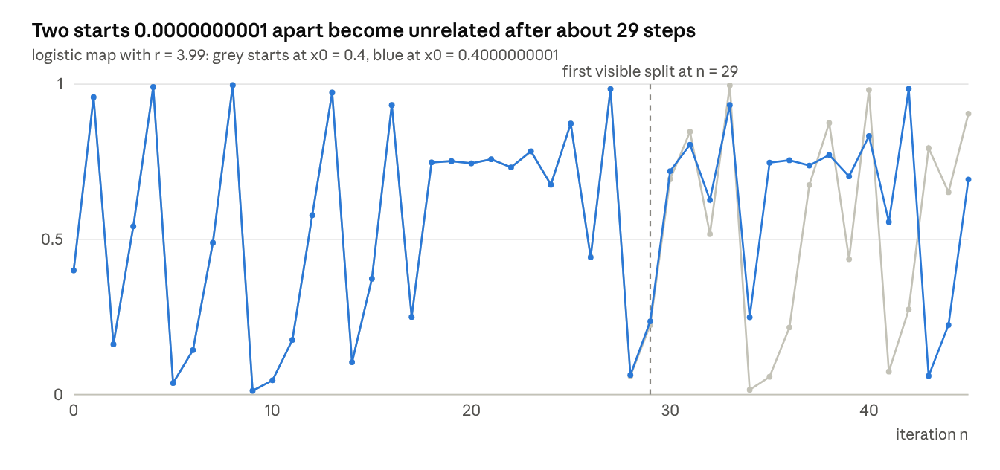
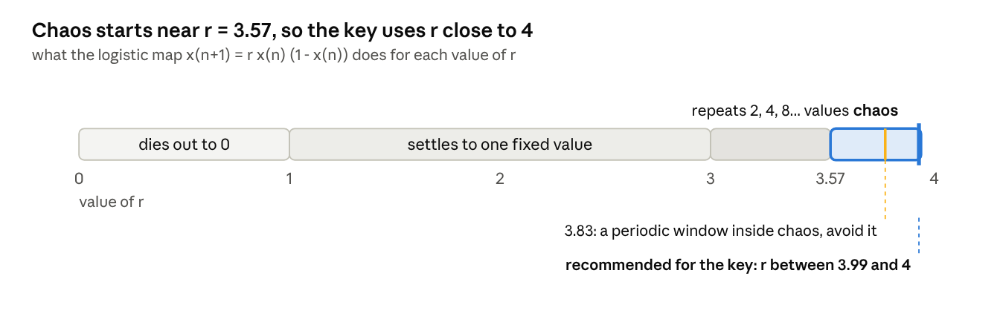
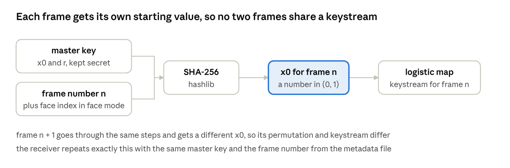

دليل مشروع تتبع الأجسام والتشفير الفوضوي
Object Tracking Using Chaotic Image Encryption with Face Privacy Mode
شوفي زهراء هذا شرح مفصل
كل قسم فيه ثلاثة أشياء: شرح بكلام بسيط مع مثال من الحياة، رسم يوضح الفكرة، وقائمة مصادر مبسطة (فيديوهات وصفحات) مكتوب أمام كل واحد منها لماذا تشاهدينه أو تقرأينه.
هل المشروع «ذكاء اصطناعي»؟
جزء واحد فقط منه كذلك. الموديل الذي يكشف الأشخاص في الصورة (اسمه YOLO) هو شبكة عصبية، أي ذكاء اصطناعي، والاستمارة نفسها تسميه deep learning. لكنك لا تبنينه ولا تدربينه، بل تنزّلينه جاهزاً وتستخدمينه مثل أي برنامج جاهز، بثلاثة أسطر برمجية. أما قلب المشروع، أي التشفير الفوضوي، فلا علاقة له بالذكاء الاصطناعي إطلاقاً: هو معادلة رياضية قصيرة تكررينها آلاف المرات، وعمليات حسابية بسيطة على أرقام البكسلات. فعندما يقول أحد إن المشروع «ذكاء اصطناعي وصعب»، الجواب: الذكاء الاصطناعي فيه جاهز، والصعوبة الحقيقية في فهم التشفير وتنفيذه بشكل صحيح، وهذا ما يشرحه الدليل بالتفصيل.
كيف تقرأين الدليل
اقرأي «الفكرة بكلام بسيط» و«مسار البيانات» أولاً، وتجاوزي الأرقام والمعادلات في المرة الأولى.
افتحي «مكتبة التعلم» في آخر القسم العربي، وشاهدي الفيديوهات بالترتيب المكتوب.
ارجعي إلى قسم التشفير بعدها، واعملي المثال اليدوي بالقلم والورقة. إذا طلعت نفس الأرقام فأنت فهمت الفكرة.
عند بدء التنفيذ، أهم قسم هو «مشاكل لم يذكرها الملفان»، لأنه يصف الأخطاء التي يقع فيها الطلاب.
القسم الإنكليزي نسخة من نفس المحتوى لتستخدمي صياغته عند كتابة التقرير.
الدليل يمر على ملف الشرح وعلى استمارة المقترح سطراً بسطر، ويذكر الأخطاء الموجودة فيهما وطريقة تصحيحها، ثم يشرح المشاكل التقنية التي لم يذكرها الملفان، وطريقة تقييم النتائج، وخطة عمل أسبوعية، وفي النهاية جدول يطابق كل مطلوب في الملفين مع القسم الذي يغطيه.
كل معلومة تقنية راجعتها من مصدرها الأصلي (توثيق المكتبات، الأبحاث، الصفحات الرسمية)، والروابط كلها في آخر الدليل. ما لم أستطع التأكد منه كتبت أمامه أنه تقدير.
الترتيب: القسم العربي كاملاً، ثم مكتبة التعلم وجدول المطابقة وجدول المصطلحات، ثم النسخة الإنكليزية، ثم المصادر.
الفكرة بكلام بسيط
النظام كاميرا مراقبة ذكية تعمل شغلتين في نفس الوقت: تتبع حركة الأشخاص أو السيارات، وتحمي الصورة بحيث لا يفهمها إلا من يملك المفتاح.
تخيلي كاميرا في مستشفى. إدارة المستشفى تحتاج تعرف كم شخص دخل الممر ومتى، لكن لا يحق لكل موظف أن يرى وجوه المرضى. هنا يأتي دور المشروع: الحاسبة تكشف الأشخاص وتعطي كل واحد رقماً ثابتاً (ID) وتتابعه من فريم لفريم، وقبل أن يُخزن الفيديو أو يُرسل تتحول الصورة، أو الوجوه فقط، إلى ضوضاء ملونة لا معنى لها. الشخص المخوّل وحده، والذي يملك المفتاح، يستطيع إرجاع الصورة الأصلية.
أين يُستخدم مثل هذا النظام
ملف الشرح يذكر أربعة أماكن: المراقبة الذكية عموماً، المستشفيات، الجامعات، والمباني العامة. القاسم المشترك بينها أن الكاميرا ضرورية للأمن، لكن الناس الذين يمرون أمامها ليسوا متهمين بشيء، فلا يحق لكل من يفتح التسجيل أن يعرف هوياتهم.
المستشفى: الإدارة تريد معرفة عدد من دخل قسم الطوارئ ومتى، من دون أن يرى موظف الاستقبال وجوه المرضى.
الجامعة: عدّ الطلاب في القاعات والممرات لأغراض السلامة، مع حماية هوية كل طالب.
المبنى العام (دائرة حكومية أو مطار): تتبع الحركة وكشف الازدحام، وفك التشفير فقط عند وقوع حادثة وبموافقة جهة مخوّلة.
المراقبة الذكية عموماً: أي كاميرا تُرسل تسجيلها إلى خادم خارجي؛ التشفير يضمن أن من يعترض الإرسال لا يرى شيئاً.
هذه الأمثلة تنفع في فصل «المقدمة» و«أهمية المشروع» في التقرير.
وضعان للنظام
تشفير الفريم كاملاً: الصورة كلها تصبح ضوضاء. أعلى خصوصية، لكن لا أحد يستطيع مشاهدة أي شيء بدون فك التشفير.
وضع خصوصية الوجوه (Face Privacy Mode): يُشفَّر مربع الوجه فقط، وباقي الصورة يبقى طبيعياً. المراقب يرى الحركة والأجسام، ولا يرى من هو الشخص.
الأفضل أن تنفذي الوضعين معاً مع خيار للتبديل بينهما، لأن هذا يعطي المشروع وزناً أكبر ويسهل المقارنة بينهما في فصل النتائج.
لماذا تشفير وليس blur؟
الـ blur (التضبيب) يدمّر المعلومة نهائياً، ولا توجد طريقة لإرجاع الوجه بعده. أما التشفير فقابل للعكس: لو احتاجت الشرطة أو المحكمة رؤية وجه شخص في حادثة معينة، الجهة المخوّلة تفك التشفير بالمفتاح. هذه هي النقطة التي تجعل المشروع مختلفاً عن تطبيقات طمس الوجوه العادية، فاحفظيها جيداً لأنها جواب سؤال «ما الجديد في مشروعك؟».
مصادر مبسطة لهذا القسم
مقال Ultralytics بالعربي: تطور كشف الأجسام وموديلات YOLO: بالعربي، يشرح ما معنى «كشف الأجسام» وكيف يعمل YOLO بدون معادلات. اقرأيه أولاً.
مقال: الفرق بين التعرف والكشف والتتبع: بالإنكليزي، قصير، يشرح بالأمثلة لماذا الكشف وحده لا يكفي ولماذا نحتاج التتبع.
مقال: ما هو تشفير XOR: بالإنكليزي، يشرح أبسط فكرة في التشفير التي سيُبنى عليها مشروعك، وهي أن العملية نفسها تُستخدم للتشفير وفك التشفير.
مسار البيانات خطوة بخطوة
كل فريم يمر بست مراحل بالترتيب، والتشفير يأتي بعد الكشف والتتبع وليس قبلهما.

كل ما داخل الإطار يحدث على الجهاز الموثوق المتصل بالكاميرا. ما يخرج منه مشفر دائماً، والمفتاح يُعطى فقط لجهة فك التشفير.
1. قراءة الفريم
المصدر إما كاميرا ويب أو ملف فيديو، ويُقرأ بـ cv2.VideoCapture. كل فريم هو مصفوفة أرقام بحجم (الارتفاع × العرض × 3)، كل رقم بين 0 و255 ويمثل شدة لون (أزرق، أخضر، أحمر بهذا الترتيب في OpenCV).
ملاحظة على ملف الشرح: وضع خطوة Frame Extraction بعد التتبع، والأدق أن الفريمات تُقرأ في البداية. المقصود في الملف على الأغلب «أخذ الفريم بعد معالجته لتشفيره»، فاكتبيها بهذا الوضوح في التقرير.
2. كشف الأجسام (Object Detection)
الفريم يدخل على موديل YOLO الجاهز، فيُرجع لكل جسم: مربعاً يحيط به (bounding box)، ونوعه (شخص، سيارة...)، ونسبة ثقة بين 0 و1. الموديلات مدربة مسبقاً على بيانات COCO وتعرف 80 نوعاً من الأجسام، فلا تحتاجين تدريب أي شيء.
بكلام بسيط: YOLO برنامج جاهز تعطينه صورة فيرجع لك قائمة مثل: «شخص داخل هذا المربع بثقة 0.91، سيارة داخل ذاك المربع بثقة 0.87». تنصّبينه بسطر واحد (pip install ultralytics) وتستدعينه بثلاثة أسطر (المثال الكامل في مكتبة التعلم). الموديل مدرّب مسبقاً على مجموعة بيانات اسمها COCO فيها 330 ألف صورة و80 نوعاً من الأجسام، منها الشخص والسيارة والحقيبة، فهو يعرف شكل الإنسان قبل أن تشغّليه بثانية واحدة.
كيف يعرف YOLO شكل الإنسان؟ تعلّم من مئات آلاف الصور المعلّمة يدوياً: أعطوه صوراً مع مربعات حول كل شخص، وعدّل أرقامه الداخلية ملايين المرات حتى صار يرسم المربعات بنفسه. هذا هو «التعلم العميق». أنت تستخدمين النتيجة النهائية فقط.
أحدث إصدار صادر من Ultralytics هو YOLO26 (حسب توثيق Ultralytics الحالي)، وYOLO11 هو البديل المستقر والأكثر شرحاً على الإنترنت. YOLO27 لم يصدر بعد. ملف الشرح يذكر YOLOv8 والاستمارة تقول «أحدث إصدار»، فاختاري واحداً واكتبيه بالاسم في الملفين.
3. التتبع (Object Tracking)
الكشف وحده يقول «يوجد شخص هنا» في كل فريم، لكنه لا يعرف أن شخص الفريم 10 هو نفسه شخص الفريم 11. التتبع يعطي كل شخص رقماً ثابتاً (ID) طول الفيديو.
بكلام بسيط: تخيلي أنك تعدّين الناس في ممر من صورة تُلتقط كل ثانية. الكشف يقول لك في كل صورة «هنا ثلاثة أشخاص»، لكنه لا يعرف هل الشخص الذي على اليسار في الصورة الثانية هو نفسه الذي كان على اليسار في الأولى. التتبع يلصق على كل شخص رقماً (1، 2، 3) ويتابعه من صورة إلى صورة بالاعتماد على شيئين: مكانه المتوقع (إذا كان يمشي يميناً فسيكون أبعد يميناً في الصورة التالية) وشكله (لون ملابسه). الرسم أدناه يوضح الفرق.

في الصف العلوي كل فريم يُحلل وحده وكل مربع اسمه «شخص» فقط. في الصف السفلي الشخص الأزرق يحمل الرقم 1 والبرتقالي الرقم 2 في كل الفريمات، حتى عندما يتقاطعان.
الملف يذكر ثلاث خوارزميات، وكل واحدة من نوع مختلف:
| الخوارزمية | النوع | ملاحظة مهمة |
|---|---|---|
| CSRT | جسم واحد | تحتاج مربعاً يدوياً في أول فريم. دقيقة لكن بطيئة. موجودة فقط في opencv-contrib-python إصدار 4، وغير موجودة في نسخ OpenCV 5 المختبرة |
| KCF | جسم واحد | أسرع من CSRT وأقل دقة، ونفس قيد التوفر |
| DeepSORT | عدة أجسام | Kalman filter للتنبؤ بالحركة + Hungarian algorithm للمطابقة + شبكة CNN تستخرج «بصمة شكل» لكل شخص |
بما أن المشروع يراقب عدة أشخاص، فـ CSRT وKCF غير مناسبين كخيار أساسي. الأسهل والأقوى أن تستخدمي التتبع المدمج في Ultralytics عبر الأمر model.track()، وفيه ست خوارزميات جاهزة منها BoT-SORT وByteTrack. انتبهي: الخوارزمية الافتراضية تغيرت بين الإصدارات (في التوثيق الحالي هي TrackTrack)، لذلك حددي الخوارزمية بنفسك، مثلاً tracker="botsort.yaml"، حتى تعرفي بالضبط ماذا تكتبين في التقرير. BoT-SORT وByteTrack من نفس عائلة DeepSORT (كشف ثم مطابقة مع Kalman filter)، فيمكنك شرح DeepSORT في الإطار النظري واستخدام BoT-SORT عملياً.
4. تحديد ما سيُشفَّر
في وضع الفريم الكامل: الفريم كله. في وضع الوجوه: يمر الفريم على كاشف وجوه، ونأخذ مربعات الوجوه فقط.
5. التشفير الفوضوي ثم الخزن أو الإرسال
البكسلات تُبعثر وتُخلط بأرقام تولدها معادلة فوضوية (الشرح الكامل في القسم التالي). الناتج يُخزن أو يُرسل، ويجب أن يكون الخزن بصيغة لا تغيّر قيم البكسلات (التفاصيل في قسم المشاكل التقنية).
6. فك التشفير والعرض
الجهة المخوّلة تقرأ الفريم المشفر، وتولد نفس سلسلة الأرقام بنفس المفتاح، وتعكس الخطوات، فيرجع الفريم الأصلي بنفس القيم تماماً، وتُرسم عليه مربعات التتبع وأرقام الـ ID.
تصحيح لجملة في ملف الشرح
الملف يقول إن الإطارات المشفرة فقط هي التي تُعالَج (only encrypted frames are processed). هذا غير صحيح تقنياً: YOLO لا يستطيع كشف أي شيء في صورة مشفرة لأنها ضوضاء. المعالجة تتم على الفريم الأصلي داخل الجهاز الموثوق المتصل بالكاميرا، والتشفير يحدث قبل أن يخرج الفريم من هذا الجهاز. اكتبيها هكذا: «only encrypted frames are stored or transmitted».
مصادر مبسطة لهذا القسم
فيديو Ultralytics: تشغيل التتبع متعدد الأجسام مع YOLO26: بالإنكليزي، عملي، يوريك الفرق بين وضع predict ووضع track وكود Python كامل مع عرض حي. شاهديه بعد ما تنصّبين المكتبة.
صفحة Ultralytics: كشف الأجسام: فيها الأسطر الثلاثة التي تشغّل YOLO وطريقة قراءة المربعات والأسماء ونسب الثقة من النتيجة. انسخي المثال كما هو.
صفحة Ultralytics: التتبع: فيها مثال كامل بالحلقة
whileمعpersist=True، وجدول يقارن الخوارزميات الست.مقال Roboflow: ما هو ByteTrack: بالإنكليزي، يشرح بالصور كيف يربط التتبع المربعات بين الفريمات على مرحلتين.
درس OpenCV: البدء مع الفيديو: أقصر درس لقراءة فيديو من كاميرا أو ملف وحفظه. انتبهي إلى أن المثال يحفظ بترميز XVID وهو مع فقد، وفي مشروعك ستستبدلينه بترميز بدون فقد (قسم المشاكل).
التشفير الفوضوي بالتفصيل
الفكرة كلها: معادلة بسيطة جداً تولّد أرقاماً تبدو عشوائية، لكنها تتكرر بالضبط إذا بدأنا من نفس القيم. هذه القيم الابتدائية هي المفتاح.
تشبيه مفيد: عندك رزمة أوراق لعب مرقمة، كل ورقة هي بكسل. التشفير خطوتان: أولاً تخلطين ترتيب الأوراق بطريقة تعتمد على كلمة سر (هذه «البعثرة»)، ثم تغيرين الرقم المكتوب على كل ورقة بحسب كلمة السر والورقة التي قبلها (هذا «الخلط»). من يعرف كلمة السر يعيد الأوراق كما كانت بالضبط، ومن لا يعرفها يرى أرقاماً بلا معنى. كلمة السر هنا ليست كلمة بل رقمان صغيران هما نقطة بداية المعادلة الفوضوية، ومن هذين الرقمين تتولد ملايين الأرقام التي تحدد كيف تُخلط الأوراق وكيف تتغير قيمها.
ما معنى «فوضوي»؟
النظام الفوضوي (chaotic) ليس عشوائياً. هو محدد تماماً (deterministic): نفس البداية تعطي نفس النتيجة كل مرة. ميزته أنه حساس جداً للبداية، فلو اختلفت القيمة الابتدائية بفرق صغير مثل 0.0000000001، تبتعد السلسلتان عن بعضهما بعد عشرات التكرارات وتصبحان مختلفتين كلياً. لهذا من لا يملك المفتاح الدقيق لا يستطيع توليد نفس الأرقام.

الخطان متطابقان تماماً حتى التكرار 28 تقريباً، ثم يفترقان ولا يعودان للتشابه. هذا معنى أن مفتاحاً قريباً جداً من الصحيح لا يفك التشفير، ولهذا سبب حذف أول 1000 تكرار: قبلها قد تتشابه سلسلتا مفتاحين متقاربين.
خريطة Logistic (المقترحة في الملف وهي الأنسب)
x قيمة بين 0 و1، وr معامل التحكم بين 0 و4.
السلوك الفوضوي يبدأ تقريباً عند r ≈ 3.56995، ويكون فوضوياً لأغلب القيم حتى r = 4.
داخل المنطقة الفوضوية توجد «نوافذ» صغيرة يرجع فيها السلوك دورياً، أشهرها قرب r ≈ 3.83. لذلك اختاري r قريبة من 4، مثلاً بين 3.99 و4.
تجنبي x₀ = 0 و0.5 و1 والقيم البسيطة جداً، لأن بعضها يعلق في نقطة ثابتة.
المفتاح = (x₀, r).

الخط يمثل قيمة r من 0 إلى 4. في الجزء الرمادي النتيجة متوقعة (تستقر أو تتكرر)، وفي الجزء الأزرق بعد 3.57 تصبح فوضوية، وهذا الجزء هو الذي يصلح للتشفير. داخله نافذة صغيرة عند 3.83 ترجع فيها المعادلة للتكرار، فاختاري r بين 3.99 و4.
مثال يدوي بقيم r = 3.99 وx₀ = 0.4:
x₁ = 3.99 × 0.4 × 0.6 = 0.9576
x₂ = 3.99 × 0.9576 × 0.0424 ≈ 0.1620
x₃ = 3.99 × 0.1620 × 0.8380 ≈ 0.5417
الأرقام تقفز بدون نمط واضح، وهذا المطلوب.
نقطتان عمليتان:
احذفي أول 1000 تكرار تقريباً (تسمى transient)، لأن البداية تكون أقرب إلى القيمة الابتدائية وأقل فوضوية.
تحويل x إلى بايت: الطريقة المباشرة floor(x × 256) ليست جيدة، لأن قيم الـ logistic map لا تتوزع بالتساوي بين 0 و1 (تتجمع قرب الطرفين). طريقة مستخدمة في الأبحاث المنشورة: k = floor(x × 10⁸) mod 256، أي أخذ أرقام من خانات عشرية بعيدة، فتتوزع القيم بشكل أفضل.
خريطة Hénon (الإضافة المتقدمة)
القيم الكلاسيكية a = 1.4 وb = 0.3، وعندها الخريطة فوضوية. قيم أخرى قد تعطي سلوكاً دورياً (مثلاً a = 1.25 مع b = 0.3)، فلا تغيري a وb عشوائياً.
المفتاح هنا (x₀, y₀)، وقيم x ليست محصورة بين 0 و1 وقد تكون سالبة، فاستخدمي القيمة المطلقة مع نفس طريقة التحويل إلى بايت.
اقتراح: استخدمي logistic للبعثرة وHénon للخلط. هكذا يكبر المفتاح ويصبح عندك «مساهمة» واضحة تشرحينها.
حجم المفتاح (Key Space)
Python يخزن الأرقام العشرية بدقة 15 إلى 16 خانة تقريباً (double). فإذا اعتبرنا أن x₀ له حوالي 10¹⁵ قيمة ممكنة، وr بين 3.57 و4 له حوالي 4 × 10¹⁴ قيمة، يكون المجموع تقريباً 4 × 10²⁹ ≈ 2⁹⁸. أبحاث التشفير الفوضوي تشترط عادة مفتاحاً أكبر من 2¹⁰⁰. لذلك مفتاح logistic وحده يقع تحت الحد بقليل، وإضافة Hénon (قيمتان إضافيتان) تحل المشكلة. هذا التقدير من حسابي، فاشرحي طريقته في التقرير ولا تكتفي بالرقم. وانتبهي: باحثو التحليل التشفيري ينتقدون هذا النوع من الحساب، لأن الحاسبة تخزن الأرقام بالنظام الثنائي وليس العشري، فالعدد الحقيقي للمفاتيح المفيدة أقل، وبعض المفاتيح ضعيفة. اذكري ذلك كقيد.
المرحلة الأولى: البعثرة (Confusion / Permutation)
الهدف تغيير أماكن البكسلات بدون تغيير قيمها.
حوّلي الفريم إلى سلسلة واحدة طولها N = الارتفاع × العرض × 3.
ولّدي N رقماً من الـ logistic map.
رتبي هذه الأرقام واحفظي ترتيب مواقعها (
np.argsort)، فينتج ترتيب جديد للمواقع من 0 إلى N−1.البكسل الذي كان في الموقع perm[i] يذهب إلى الموقع i.
بعد هذه الخطوة تظهر الصورة كضجيج، لكن الهيستوغرام (توزيع الألوان) لم يتغير لأن القيم نفسها لم تتغير. لهذا البعثرة وحدها ضعيفة، وأبحاث كثيرة كسرت أنظمة تعتمد على البعثرة فقط.
مثال كامل بالأرقام على 9 بكسلات
هذا المثال حسبته بنفسي، واعملي مثله بالقلم حتى تتأكدي أنك فهمتِ. صورة صغيرة 3×3 قيمها بالترتيب:
الأصل: 50، 90، 10، 70، 30، 60، 20، 80، 40
ترتيب البعثرة الذي ولّدته الخريطة الفوضوية (أي بكسل يأتي في كل موقع): 6، 2، 8، 0، 4، 7، 1، 5، 3
بعد البعثرة: 20، 10، 40، 50، 30، 80، 90، 60، 70 (نفس الأرقام، أماكن مختلفة)
سلسلة المفتاح k من الخريطة الفوضوية: 7، 13، 21، 2، 9، 30، 5، 17، 11، وقيمة البداية c₀ = 100
الخلط: أول بكسل c₁ = 7 ⊕ ((20 + 100) mod 256) = 7 ⊕ 120 = 127، والثاني c₂ = 13 ⊕ ((10 + 127) mod 256) = 13 ⊕ 137 = 132، وهكذا.
الناتج المشفر: 127، 132، 185، 233، 14، 64، 159، 202، 27
لاحظي أن الأرقام الناتجة لا تشبه الأصل أبداً. والآن أهم ملاحظة: لو غيّرنا بكسلاً واحداً في الأصل (30 تصبح 31)، يصبح الناتج 127، 132، 185، 233، 1، 79، 172، 249، 52. الأرقام الأربعة الأولى لم تتغير، وكل ما بعد البكسل المتغير تغيّر. هذا بالضبط سبب المرور العكسي في الخلط: حتى يتغير أيضاً ما قبل البكسل المتغير.

الشبكة الوسطى فيها نفس الأرقام التسعة بأماكن مختلفة، ولهذا الهيستوغرام لا يتغير بعد البعثرة وحدها. الشبكة اليمنى فيها أرقام جديدة كلياً.
المرحلة الثانية: الخلط (Diffusion)
الهدف تغيير قيم البكسلات بحيث يؤثر كل بكسل على البكسلات التي بعده. الصيغة المقترحة:
XOR بكلام بسيط: الحاسبة تخزن كل رقم كسلسلة من 0 و1 (بتات). XOR عملية تقارن بتين: إذا اختلفا تعطي 1، وإذا تشابها تعطي 0. مثال: الرقم 5 هو 101 والرقم 3 هو 011، نقارن خانة بخانة فنحصل على 110 أي الرقم 6. الميزة التي يقوم عليها التشفير كله: إذا طبقتِ XOR مرتين بنفس الرقم ترجعين إلى الأصل، فـ 6 ⊕ 3 = 5. لهذا العملية نفسها تشفّر وتفك التشفير. في Python رمزها ^، وجرّبيها الآن: print(5 ^ 3) تطبع 6، وprint(6 ^ 3) تطبع 5.
أما mod 256 فمعناها «خذي باقي القسمة على 256»، لأن قيمة البكسل لا يمكن أن تتجاوز 255. فمثلاً 250 + 10 = 260، وباقي قسمتها على 256 هو 4. وعكسها في فك التشفير: 4 − 10 = −6، وباقي −6 على 256 في Python هو 250.
p هو البكسل بعد البعثرة، وk بايت من السلسلة الفوضوية، وc الناتج المشفر، و⊕ عملية XOR.
c₀ (قيمة البداية) تؤخذ من المفتاح.
بما أن كل c يعتمد على الذي قبله، تغيير بكسل واحد في الصورة الأصلية يغيّر كل ما بعده.
نفّذي الخلط مرتين: مرة من البداية للنهاية، ومرة من النهاية للبداية بسلسلة أخرى. بدون المرور العكسي، تغيير بكسل لا يؤثر إلا على ما بعده في ترتيب البعثرة، فتطلع نتيجة NPCR ناقصة بحسب موقع البكسل (في المتوسط نحو 50%، وفي تجربتنا على photo.jpg طلعت 7.4%) بدل 99.6%.
لماذا ليس XOR فقط (c = p ⊕ k)؟ لأن XOR بسلسلة ثابتة لا يجعل الناتج حساساً للصورة نفسها: تغيير بكسل واحد يغيّر بكسلاً واحداً فقط في الناتج. ولماذا الجمع مع XOR معاً؟ لأن استخدام XOR فقط أو الجمع فقط في التسلسل يجعل الفرق ينتقل بنفس القيمة لكل البكسلات اللاحقة، فيفشل مقياس UACI. خلط العمليتين يجعل الفرق يتغير من بكسل لآخر.
فك التشفير
نفس المفتاح يولد نفس السلاسل، والخطوات تُعكس بالترتيب المعاكس:
فك الخلط العكسي (الثاني) ثم الخلط الأمامي (الأول).
فك البعثرة: البكسل الموجود في الموقع i يرجع إلى الموقع perm[i].
إعادة تشكيل السلسلة إلى شكل الفريم (الارتفاع × العرض × 3).
إذا كان كل شيء صحيحاً، الفريم المفكوك يطابق الأصلي بكسلاً ببكسل، والفرق بينهما صفر. هذا أول اختبار يجب أن تنجحي فيه قبل أي شيء آخر.
تنبيه عن الدقة
الحساب بالأرقام العشرية في الحاسبة ليس مثالياً، والسلسلة الفوضوية تضخّم أي فرق صغير. لذلك التشفير وفك التشفير يجب أن يستخدما نفس الكود ونفس طريقة الحساب. لو شفّرتِ بـ Python وفككتِ بلغة أخرى قد يفشل الفك.
مصادر مبسطة لهذا القسم
فيديو Veritasium: هذه المعادلة ستغير نظرتك للعالم: بالإنكليزي مع ترجمة، أفضل شرح على الإطلاق لمعادلة logistic ولماذا تصبح فوضوية عند r ≈ 3.57. شاهديه قبل أي شيء آخر في هذا القسم.
ويكيبيديا: Logistic map: فيها جدول السلوك لكل مدى من r، ورسم التفرع، وفقرة عن استخدامها لتوليد أرقام شبه عشوائية مع تحذير من ضعفها (الدورات القصيرة في حساب الحاسبة).
ويكيبيديا: Hénon map: المعادلتان والقيم الكلاسيكية a = 1.4 وb = 0.3، وصور الجاذب الغريب.
مقال boot.dev: شرح One-Time Pad وXOR: بالإنكليزي، يشرح XOR بمثال «hello world» ويبين أن تطبيقها مرتين يرجع النص الأصلي. المثال البرمجي بلغة Go لكن الفكرة نفسها.
مقال: ما هو تشفير XOR: أقصر وأبسط، ويذكر أن ضعف XOR ليس في العملية بل في طريقة استخدام المفتاح، وهذا ما يحله الخلط المتسلسل.
ويكيبيديا: Entropy (information theory): لفهم مقياس الإنتروبي: عملة عادلة = 1 بت، وصورة مشفرة مثالية = 8 بت لكل بكسل.
مشروع تخرج من جامعة بابل: Image Encryption using a logistic chaotic system: مشروع عراقي مشابه لجزء التشفير في مشروعك (المشرف د. حيدر كاظم زغير). مفيد لترى شكل مشروع منجز، مع العلم أنه يشفّر صوراً ثابتة ولا يتضمن تتبعاً ولا وجوهاً.
مستودع GitHub: Encryption And Decryption Using Chaotic Key Sequence: تطبيق Python بسيط يشفّر صورة بسلسلة فوضوية ويرسم مخطط التفرع. اقرأي الكود بعد فهم الفكرة، ولا تنسخيه كما هو لأن الشرح فيه قليل.
بحث Zhang وآخرون (arXiv): بحث علمي، ليس للمبتدئ، لكن فيه بالضبط القوانين والقيم المثالية التي ستكتبينها في فصل النتائج. ارجعي إليه عند الكتابة فقط.
وضع خصوصية الوجوه
في هذا الوضع يُشفَّر مربع الوجه فقط بنفس خوارزمية التشفير، وباقي الفريم يبقى كما هو، والتتبع يستمر عادياً لأن YOLO يكشف الشخص من جسمه وليس من وجهه.
بكلام بسيط: كاشف الوجوه برنامج جاهز مثل YOLO، لكنه متخصص في شيء واحد: يعطيك مربعاً حول كل وجه. تأخذين الجزء الذي داخل المربع فقط، تشفّرينه بنفس الطريقة التي شرحناها، وترجعينه إلى مكانه. الرسم أدناه يوضح الفريم قبل وبعد.

المربع المنقط هو مربع الوجه بعد تكبيره قليلاً، وهو الجزء الوحيد الذي يتحول إلى ضوضاء. مربع الجسم ورقم التتبع يبقيان كما هما.
اختيار كاشف الوجوه
| الكاشف | الحكم | السبب |
|---|---|---|
| Haar Cascade | لا يُنصح به | قديم (2001)، سريع، لكن يعطي كشوفات خاطئة كثيرة، ولا يعمل جيداً مع الوجه الجانبي أو المغطى جزئياً |
| OpenCV DNN (SSD ResNet-10) | قديم | كان الخيار الأفضل سابقاً، والآن يُعتبر من الملفات القديمة |
YuNet عبر cv2.FaceDetectorYN | الموصى به | خفيف، يعمل على CPU، ويعطي لكل وجه مربعاً و5 نقاط (العينان، الأنف، طرفا الفم) ونسبة ثقة |
YuNet يُرجع لكل وجه صفاً من 15 رقماً: أول 4 أرقام للمربع (x, y, العرض, الارتفاع)، ثم 10 أرقام لإحداثيات النقاط الخمس، وآخر رقم لنسبة الثقة. الموديل الحالي اسمه face_detection_yunet_2026may.onnx ويقبل أي حجم صورة، وهذا مهم مع OpenCV 5. النسخة الأقدم 2023mar تعمل مع OpenCV 4. ويجب استدعاء setInputSize بحجم الفريم قبل كل كشف.
فكرة بديلة: موديل YOLO للوضعيات (pose) يعطي نقاط الجسم ومنها الأنف والعينان والأذنان، فيمكن حساب مربع الوجه منها بدون موديل ثانٍ. هذا خيار إضافي إذا أردتِ تقليل عدد الموديلات، لكن YuNet أبسط للبداية.
عن «YOLO-face» المذكور في ملف الشرح: ليس موديلاً رسمياً من Ultralytics؛ قائمة موديلاتهم الرسمية لا تحتوي على موديل وجوه. الاسم يُطلق على موديلات YOLO دربها أشخاص من المجتمع على صور وجوه ونشروها على GitHub. تعمل، لكن جودتها ومصدرها يختلفان من مستودع لآخر. YuNet أفضل لك لأنه مدمج في OpenCV رسمياً، وملفه صغير (أقل من ميغابايت)، ولا يحتاج تنصيب شيء إضافي. اذكري في التقرير أنك اخترتِه لهذه الأسباب.
خطوات التشفير على مربع الوجه
اكشفي الوجوه في الفريم.
كبّري كل مربع بنسبة 10 إلى 20% من كل جهة، لأن الكاشف أحياناً يقص الجبهة أو الذقن، والشعر والأذنان أيضاً تكشف الهوية.
قصّي المربع حتى لا يخرج عن حدود الفريم (x وy لا يقلان عن صفر، والطرف الآخر لا يتجاوز العرض والارتفاع).
اقطعي المنطقة
roi = frame[y1:y2, x1:x2]وشفّريها بنفس الخوارزمية (طول السلسلة هنا = عرض المربع × ارتفاعه × 3).أرجعي المنطقة المشفرة إلى مكانها في الفريم.
المعلومات الإضافية (Metadata)
لفك التشفير لاحقاً يجب أن تعرفي أين كانت الوجوه. لذلك خزني لكل فريم: رقم الفريم، وإحداثيات كل مربع وجه بعد التكبير والقص. ملف JSON أو CSV بجانب الفيديو يكفي. هذا الملف لا يكشف هوية أحد، لكنه يكشف مكان الوجوه، فاذكري في التقرير أنه يمكن تشفيره أيضاً أو حمايته بصلاحيات.
واجعلي مفتاح كل وجه مختلفاً، بنفس طريقة SHA-256 المشروحة في قسم المشاكل التقنية لاشتقاق مفتاح لكل فريم، مع إضافة رقم الوجه. إذا استخدمتِ نفس السلسلة لكل الوجوه في كل الفريمات، يمكن لمهاجم يقارن وجهين مشفرين أن يستنتج معلومات عنهما.
نقطة ضعف يجب أن تذكريها
كاشف الوجوه قد يفوّت وجهاً في بعض الفريمات (وجه جانبي، حركة سريعة، إضاءة ضعيفة)، فيظهر الوجه مكشوفاً في ذلك الفريم. حلول مقترحة:
إبقاء آخر مربع وجه معروف لنفس الشخص (بنفس الـ ID من التتبع) لعدة فريمات إذا فشل الكشف.
تخفيض حد الثقة قليلاً، مع العلم أن ذلك يزيد الكشوفات الخاطئة.
قياس هذه المشكلة كرقم في النتائج: نسبة الفريمات التي ظهر فيها وجه بدون تشفير. هذا قياس مباشر لهدف المشروع نفسه، أي الخصوصية، ويقوّي فصل النتائج.
الـ blur كوضع للمقارنة
يمكن إضافة خيار ثالث هو cv2.GaussianBlur على مربع الوجه، للمقارنة فقط. الـ blur أسرع، لكنه لا يُعكس. وجود المقارنة في فصل النتائج يوضح لماذا اخترتِ التشفير.
مصادر مبسطة لهذا القسم
درس OpenCV الرسمي: كشف الوجوه بـ FaceDetectorYN: فيه كود Python كامل، ورابط تنزيل ملف الموديل، وشرح الـ 15 رقماً التي يرجعها لكل وجه. الدرس يذكر أيضاً «التعرف على الوجوه» (SFace)، وهذا ليس مطلوباً في مشروعك فتجاوزيه.
LearnOpenCV: مقارنة كواشف الوجوه مع YuNet: يشرح لماذا Haar قديم ولماذا YuNet هو الخيار الحالي، مع صور تقارن النتائج على وجوه جانبية ومغطاة.
LearnOpenCV: تضبيب الوجوه في الوقت الحقيقي مع YuNet: درس يسوي بالضبط نصف مشروعك (كشف الوجه ثم blur). خذي منه قراءة الكاميرا وقص مربع الوجه، واستبدلي الـ blur بتشفيرك.
مراجعة استمارة المقترح
الاستمارة جيدة في مجملها، وفيها ثلاثة أخطاء كتابية وثلاث خانات فارغة يجب ملؤها قبل التسليم.
| الخانة | المكتوب حالياً | الحالة | المطلوب |
|---|---|---|---|
| العنوان الإنكليزي | Object Tracking Using Chaotic Image Encryption with Face Privacy Mode | سليم | لا تغيير |
| العنوان العربي | تتبع االجسام باستخدام تشفير الصور الفوضوي مع نمط حماية خصوصية الوجوه | خطأ إملائي | «االجسام» بألفين، والصحيح «الأجسام». صياغة أوضح إن أردتِ: تتبع الأجسام باستخدام التشفير الفوضوي للصور مع نمط حماية خصوصية الوجوه |
| اسم المشرف والتوقيع والتاريخ | فارغ | طبيعي | تملؤه جهة الإشراف |
| Aim of Project | نظام تتبع يحمي الخصوصية بإخفاء الوجوه والتشفير الفوضوي قبل الإرسال أو الخزن | سليم | لا تغيير. وهو يؤكد أن التشفير بعد المعالجة، وهذا يخالف جملة ملف الشرح التي صححناها سابقاً |
| Project Outcomes | خمس نقاط | مقبول | النقطة الخامسة (Understand the importance...) هدف تعليمي وليست مخرجاً يمكن قياسه. اقتراح بديل: Compare full-frame and face-only encryption in terms of privacy protection and processing speed |
| Project type | لا يوجد اختيار | ناقص | اختاري Practical (Simulation)، لأن العمل برمجي على حاسبة وفيديوهات، ولا يوجد تصنيع قطعة إلكترونية |
| Equipment: PC with GPU | مكتوب | سليم مع ملاحظة | الـ GPU يسرّع العمل لكنه ليس شرطاً. نسخة nano من YOLO26 مصممة لتعمل بسرعة على المعالج العادي، وحسب Ultralytics تعمل أسرع بنسبة تصل إلى 43% على المعالجات العادية |
| Equipment: YOLO (latest version) | عام | يحتاج تحديد | اكتبي Ultralytics YOLO26 (أو YOLO11 إذا فضّلتِ الإصدار الأكثر شرحاً). وأضيفي NumPy لأن التشفير مبني عليها |
| Equipment: Public datasets | عام | يفضّل تحديده | مثلاً MOT17 للتتبع وWIDER FACE للوجوه (التفاصيل في قسم الأدوات) |
| SDGs: Yes / No | لا يوجد اختيار | ناقص | أشّري Yes |
| SDG No. | 9، 11، 16 | سليم | الأرقام تطابق قائمة الأهداف في الصفحة الثانية: 9 الصناعة والابتكار والبنية التحتية، 11 مدن ومجتمعات مستدامة، 16 السلام والعدالة والمؤسسات القوية |
| Brief justification | The project support ... image procession ... | خطآن لغويان | support ← supports، وprocession (موكب) ← processing (معالجة) |
| قرار اللجنة العلمية وتوقيع رئيس القسم | فارغ | طبيعي | تملؤه اللجنة |
جملة التبرير بعد التصحيح
The project supports intelligent and secure surveillance systems while protecting individual privacy through encrypted image processing and face privacy preservation.
لماذا هذه الأهداف الثلاثة بالذات
الاستمارة تطلب الأرقام فقط، لكن المناقشة قد تسأل «ما علاقة مشروعك بهذه الأهداف؟». هذه صيغة جاهزة لكل هدف، والعناوين الرسمية من موقع الأمم المتحدة:
| الهدف | عنوانه الرسمي (مترجم عن الإنكليزي) | علاقة المشروع به بجملة واحدة |
|---|---|---|
| 9 | بناء بنية تحتية قادرة على الصمود، وتحفيز التصنيع الشامل والمستدام، وتشجيع الابتكار | المشروع يطوّر تقنية مراقبة جديدة تجمع بين الكشف الآلي وحماية البيانات، وهذا ابتكار في البنية التحتية الرقمية للمدن والمؤسسات |
| 11 | جعل المدن والمستوطنات البشرية شاملة وآمنة وقادرة على الصمود ومستدامة | كاميرات الأماكن العامة تزيد الأمان، والمشروع يجعلها ممكنة بدون التضحية بخصوصية سكان المدينة |
| 16 | إقامة مجتمعات سلمية وشاملة، وإتاحة الوصول إلى العدالة للجميع، وبناء مؤسسات فعالة وخاضعة للمساءلة | التسجيل المشفر يحفظ الدليل للعدالة عند الحاجة، ويمنع في الوقت نفسه إساءة استخدام المراقبة من داخل المؤسسة لأن الفك يحتاج تخويلاً |
المخرج الخامس في الاستمارة
المخرج الخامس (Understand the importance of privacy-preserving intelligent surveillance systems) هدف تعلّمي يصعب قياسه. إذا أبقيتِه كما هو، فالفصل الذي يغطيه هو فصل «المقدمة ومراجعة الأدبيات»: اكتبي فيه لماذا تحتاج أنظمة المراقبة إلى حماية الخصوصية، مع أمثلة الأماكن الأربعة المذكورة في ملف الشرح. وإذا استبدلتِه بالصيغة المقترحة في الجدول أعلاه (مقارنة الوضعين)، فالفصل الذي يغطيه هو فصل النتائج.
ملاحظة على ملف الشرح نفسه
كلمات مثل «Applica+ons» و«Detec<on» و«transmiYed» في ملف الشرح غالباً ليست أخطاء كتابية، بل مشكلة في تحويل الملف إلى PDF، لأن الخط يدمج حرفي ti أو tt في رمز واحد. تأكدي من الملف الأصلي (Word)، وإن كانت هكذا في الأصل فصححيها.
مشاكل لم يذكرها الملفان
أخطر مشكلة هي الضغط: لو خُزّن الفيديو المشفر بصيغة MP4 أو JPG، فك التشفير سيفشل بالكامل. هذه وبقية المشاكل أدناه هي الأماكن التي يتعطل فيها الطلاب عادة.
بكلام بسيط عن الضغط: ملفات الفيديو والصور العادية (MP4 وJPG) تصغّر حجمها برمي تفاصيل لا تلاحظها العين، مثل تغيير لون بكسل من 137 إلى 136. في صورة عادية لا فرق. لكن الصورة المشفرة ضوضاء بلا نمط يمكن ضغطه، فالضاغط يقرّب كل شيء ويغيّر أغلب أرقامها (قسناها: JPG غيّر 99% من بايتات صورة مشفرة)، فيرجع الفك ضوضاء. (خطأ في بايت واحد فقط يفسد نحو 3 بكسلات بعد الفك؛ المشكلة هي عدد الأرقام المتغيرة.) لذلك نخزن بصيغ «بدون فقد» مثل PNG، وهي تصغّر الملف بطريقة ذكية بدون تغيير أي رقم. الرسم أدناه يوضح الفرق.

المسار الأيسر هو الخطأ الشائع: الحفظ بصيغة فيديو عادية. المسار الأيمن هو الصحيح.
1. الضغط يدمّر الفريم المشفر
صيغ مثل MP4 (H.264) وJPG وMJPEG «ضاغطة مع فقد» (lossy)، أي أنها تغيّر قيم البكسلات قليلاً لتصغير الحجم. في صورة عادية لا تلاحظ العين الفرق. لكن في صورة مشفرة، تغيّر بكسل واحد بمقدار 1 يجعل فك التشفير يعطي ضوضاء، لأن الخلط يربط كل بكسل بالذي قبله.
الحل:
خزّني كل فريم كصورة PNG (
cv2.imwrite('frame_0001.png', enc))، لأن PNG لا يفقد أي معلومة.أو استخدمي ترميز فيديو بدون فقد. توثيق OpenCV نفسه يذكر FFV1 وHFYU كأمثلة:
cv2.VideoWriter_fourcc(*'FFV1')مع ملف بامتداد.aviأو.mkv.نفس الشيء في الإرسال عبر الشبكة: أرسلي البايتات كما هي، ولا تمرّريها على ترميز فيديو عادي.
2. الفريم المشفر لا يُضغط أصلاً
الضوضاء العشوائية لا يمكن ضغطها، فحتى PNG وFFV1 لن يصغّرا الفريم المشفر. احسبيها: فريم 640×480 ملون = 640 × 480 × 3 = 921,600 بايت. بسرعة 30 فريم في الثانية يصبح 27.6 ميغابايت في الثانية، أي حوالي 1.66 غيغابايت لكل دقيقة.
ماذا يعني هذا عملياً؟
للتجارب، استخدمي فيديوهات قصيرة (10 إلى 30 ثانية) ودقة منخفضة.
اذكري الحجم كقيد (limitation) في التقرير.
وضع الوجوه هنا أفضل بكثير: أغلب الفريم يبقى طبيعياً وقابلاً للضغط بدون فقد، والجزء المشفر صغير. هذه مقارنة جميلة لفصل النتائج: حجم الملف في الوضعين.
3. السرعة
معادلة logistic تحسب كل قيمة من التي قبلها، فلا يمكن حسابها دفعة واحدة بـ NumPy، والخلط أيضاً متسلسل. حلقة Python عادية على قرابة مليون قيمة لكل فريم ستكون بطيئة، وقد تأخذ جزءاً كبيراً من الثانية أو أكثر للفريم الواحد. قيسي الوقت بنفسك على حاسبتك.
الحلول:
مكتبة Numba: تضعين
@njitفوق دالة الحلقة، فتتحول إلى كود آلة سريع. هذا الحل الأسهل.العمل بدقة أقل (مثلاً 640×480 أو أقل) في العرض الحي.
لا تحلّي مشكلة السرعة بتوليد السلسلة مرة واحدة وإعادة استخدامها لكل الفريمات، لأن هذا يضعف التشفير (النقطة التالية).
4. مفتاح مختلف لكل فريم
إذا استخدمتِ نفس السلسلة الفوضوية لكل الفريمات، يصبح ترتيب البعثرة واحداً في كل الفيديو، ويمكن لمهاجم يملك فريمات كثيرة أن يستنتج الكثير. الحل: اشتقّي قيمة بداية جديدة لكل فريم من المفتاح الرئيسي ورقم الفريم. أبسط طريقة صحيحة: احسبي SHA-256 للمفتاح مع رقم الفريم (hashlib.sha256)، وحوّلي جزءاً من الناتج إلى رقم بين 0 و1 ليكون x₀ لذلك الفريم. وفي وضع الوجوه أضيفي رقم الوجه أيضاً.

المفتاح الرئيسي لا يتغير، لكن كل فريم يأخذ نقطة بداية مختلفة للمعادلة. SHA-256 دالة جاهزة في Python تحول أي نص إلى رقم طويل يبدو عشوائياً، ونفس النص يعطي نفس الرقم دائماً.
5. أين ترسمين مربعات التتبع؟
إذا رسمتِ المربعات على الفريم قبل تشفيره، ستُشفَّر معه، وفي وضع الوجوه قد يغطي المربع جزءاً من الوجه. الأفضل: خزّني نتائج التتبع (رقم الفريم، ID، المربع) في ملف البيانات الإضافية، وارسميها بعد فك التشفير عند العرض.
6. حدود الأمان
أبحاث كثيرة نُشرت ثم كُسرت لأنظمة تشفير صور تعتمد على logistic map، غالباً بهجوم يسمى chosen-plaintext attack (يختار المهاجم صوراً معينة ويشفرها ليستنتج المفتاح). كما أن نجاح اختبارات الإنتروبي والارتباط، وحتى NPCR وUACI، شرط لازم وليس كافياً، فهناك أنظمة ثبت ضعفها لاحقاً وحققت فيها قيماً شبه مثالية. لا تدّعي في التقرير أن النظام «غير قابل للكسر». اكتبي أنه مناسب لإثبات الفكرة أكاديمياً، وأن الأنظمة الحقيقية تستخدم معايير مثل AES. وإذا أردتِ إضافة قوية: قارني سرعة تشفيرك بسرعة AES على نفس الفريمات.
7. أخطاء برمجية شائعة
الفريم في OpenCV نوعه
uint8. عند الجمع حوّليه إلىintأولاً، ثم% 256، ثم أرجعيهuint8، وإلا قد تحصل نتائج غير متوقعة بسبب تجاوز الحد.لا تنصّبي
opencv-pythonوopencv-contrib-pythonمعاً. إذا احتجتِ CSRT أو KCF، انصبيopencv-contrib-pythonفقط (إصدار 4)، لأن وجود الحزمتين معاً يسبب أخطاء من نوع «module has no attribute».Ultralytics مرخصة بـ AGPL-3.0. للمشروع الأكاديمي لا مشكلة، لكن إن تحوّل لمنتج تجاري يحتاج ترخيصاً تجارياً.
8. الإرسال عبر الشبكة (Encrypted Video Stream)
الاستمارة تقول «قبل الإرسال أو الخزن»، وملف الشرح يذكر Encrypted Video Stream. يكفي للمشروع أن تحاكي الإرسال بأبسط شكل، ولا تحتاجين خادم حقيقي:
المحاكاة الأبسطة (موصى بها): برنامجان على نفس الحاسبة. الأول (الكاميرا) يكتب الفريمات المشفرة وملف البيانات الإضافية في مجلد اسمه مثلاً
outbox. الثاني (جهة الفك) يقرأ من المجلد نفسه ويفك ويعرض. هذا يثبت الفكرة ويكفي للمناقشة.إرسال حقيقي بين حاسبتين (اختياري): مكتبة
socketالمدمجة في Python ترسل البايتات كما هي عبر الشبكة المحلية. أرسلي لكل فريم: رقمه، ثم طول البيانات، ثم بايتات الصورة المشفرة بصيغة PNG، ثم بيانات الوجوه. لا تستخدمي بث فيديو عادي (RTSP أو WebRTC) لأنه يضغط مع فقد.ما يجب أن يبقى سرياً: المفتاح لا يُرسل مع الفريمات أبداً. يُتفق عليه مسبقاً بين الجهتين (مثلاً ملف إعدادات عند جهة الفك فقط).
في التقرير اكتبي أن المشروع «يحاكي الإرسال»، ولا تدّعي اختبار الإرسال على إنترنت حقيقي إن لم تفعلي.
كيف تقيّمين النتائج
الاستمارة تَعِد بتقييم دقة التتبع وأداء التشفير، فيجب أن يحتوي فصل النتائج على أرقام للجهتين. القيم المثالية أدناه هي المعتمدة في الأبحاث للصور ذات 8 بت لكل قناة.
بكلام بسيط: التقييم معناه أن تثبتي بالأرقام أن النظام يعمل، لا أن تقولي «شغّلته وكان جيداً». للتشفير السؤال: هل الصورة المشفرة تشبه الضوضاء فعلاً، وهل أصغر تغيير في المفتاح أو الصورة يقلب النتيجة؟ وللتتبع السؤال: كم شخصاً اكتشف النظام من الموجودين فعلاً، وهل بقي رقم كل شخص ثابتاً؟ كل سؤال من هذه له رقم متعارف عليه في الأبحاث، وهذا القسم يشرحها واحداً واحداً. ابدأي بالأسهل: فرق صفر بين الأصلية والمفكوكة، ثم الهيستوغرام، ثم الباقي.
مقاييس التشفير
| المقياس | ماذا يقيس | القيمة المثالية للصورة المشفرة | طريقة الحساب باختصار |
|---|---|---|---|
| Histogram | توزيع قيم البكسلات | مسطّح تقريباً (كل القيم 0–255 بنفس التكرار) | ارسمي هيستوغرام الأصلية والمشفرة جنباً إلى جنب |
| Correlation | الارتباط بين البكسلات المتجاورة أفقياً وعمودياً وقطرياً | قريب من 0 (الصورة الأصلية عادة قريبة من 1) | خذي آلاف الأزواج المتجاورة عشوائياً واحسبي معامل الارتباط |
| Entropy | العشوائية | 8 (أعلى قيمة ممكنة لصورة 8 بت) | H = −Σ p(i) log₂ p(i) على القيم 0–255 |
| NPCR | نسبة البكسلات التي تغيرت في الناتج عند تغيير بكسل واحد في المدخل | 99.6094% | (القانون أدناه) |
| UACI | متوسط شدة التغير في الناتج | 33.4635% | (القانون أدناه) |
| Key space | حجم المفتاح | أكبر من 2¹⁰⁰ | التقدير في قسم التشفير |
| Key sensitivity | هل يفشل الفك بمفتاح قريب جداً من الصحيح؟ | الفك بمفتاح خاطئ يعطي ضوضاء كاملة | غيّري x₀ بمقدار 10⁻¹⁴ وحاولي الفك |
| صحة فك التشفير | هل يرجع الفريم الأصلي بالضبط؟ | فرق صفر بين الأصلي والمفكوك | np.array_equal(original, decrypted) يجب أن تعطي True |
| الوقت | سرعة التشفير والفك | أقل ما يمكن | ميلي ثانية لكل فريم، لكل دقة ولكل وضع |
قانونا NPCR وUACI، حيث C₁ وC₂ صورتان مشفرتان بنفس المفتاح، والفرق بين أصليهما بكسل واحد فقط، وD(i,j) = 1 إذا اختلف البكسل و0 إذا تطابق، وM×N حجم الصورة:
إذا طلعت NPCR أقل بكثير من 99% فالمرور العكسي في الخلط ناقص. وإذا كانت NPCR جيدة وUACI بعيدة جداً عن 33.46%، فطريقة الخلط ضعيفة (راجعي سبب خلط XOR مع الجمع في قسم التشفير).

نفس الفكرة تنطبق على حساسية المفتاح: بدل تغيير بكسل في الصورة، غيّري المفتاح بمقدار ضئيل جداً (10⁻¹⁴) وحاولي فك التشفير: يجب أن تحصلي على ضوضاء كاملة لا على صورة مشوشة تتبين منها الملامح.
مقاييس التتبع
FPS: عدد الفريمات في الثانية. قيسيه ثلاث مرات: الكشف والتتبع فقط، ثم مع التشفير الكامل، ثم مع تشفير الوجوه. الفرق بين الأرقام الثلاثة هو «تكلفة الخصوصية»، وهي نتيجة مهمة.
MOTA: يجمع ثلاثة أخطاء: الأشخاص الذين لم يُكتشفوا (FN)، والكشوفات الخاطئة (FP)، وتبديل الأرقام بين الأشخاص (IDSW)، ويقسمها على العدد الحقيقي للأشخاص (GT). القيمة 1 تعني تتبعاً مثالياً. عيبه أنه يتأثر بجودة الكشف أكثر من ثبات الأرقام.
IDF1: يقيس هل يحتفظ كل شخص بنفس الرقم طول الفيديو، وهو أنسب لمشروع مراقبة.
HOTA: مقياس أحدث يوازن بين الكشف والمطابقة (الجذر التربيعي لحاصل ضرب دقة الكشف DetA ودقة المطابقة AssA). اختياري.
هذه المقاييس تحتاج ملف «الإجابات الصحيحة» (ground truth). مع بيانات MOT17 الإجابات موجودة، وأداة TrackEval هي المعتمدة لحسابها. أما مع فيديوهاتك الخاصة فلا توجد إجابات جاهزة، والحل العملي: خذي مقطعاً قصيراً (مثلاً 300 فريم) وعدّي يدوياً كم مرة تبدّل رقم شخص.
مقياس خاص بالخصوصية
نسبة تسرب الوجوه: من بين الفريمات التي فيها وجه ظاهر، كم فريماً بقي فيه الوجه بدون تشفير؟ اعرضيها مع تأثير حد الثقة لكاشف الوجوه عليها.
مصادر مبسطة لهذا القسم
ويكيبيديا: Entropy (information theory): الفكرة بالأمثلة (عملة عادلة = 1 بت) قبل القانون.
مستودع TrackEval على GitHub: الأداة التي يستخدمها الجميع لحساب MOTA وIDF1 وHOTA على MOT17؛ لا تحتاج إلا numpy وscipy.
صفحة MOT17 على موقع MOTChallenge: تنزيل الفيديوهات مع الإجابات الصحيحة (5.5 غيغابايت كاملة، أو 9.7 ميغابايت للملفات النصية فقط).
بحث Kay وآخرون (arXiv): القسم 4.3 فيه أوضح تعريف مختصر لـ MOTA وIDF1 وHOTA. اقرأي ذلك القسم فقط.
الأدوات والبيانات وخطة العمل
كل الأدوات مجانية، والخطة عشرة أسابيع تقريباً بمعدل عمل منتظم. هذا تقدير، وقد يقصر إذا كانت أساسيات Python عندك جيدة.
المكتبات
| المكتبة | الاستخدام | التنصيب |
|---|---|---|
| Python 3.10 أو أحدث | لغة المشروع | من python.org |
| ultralytics | YOLO26 وخوارزميات التتبع الست المدمجة | pip install -U ultralytics |
| opencv-python (4.10 أو أحدث) | قراءة الفيديو، YuNet، الرسم، الخزن | تأتي عادة مع ultralytics |
| numpy | كل عمليات التشفير على المصفوفات | pip install numpy |
| numba | تسريع حلقات logistic والخلط | pip install numba |
| matplotlib | رسم الهيستوغرام ومخططات الارتباط | pip install matplotlib |
| hashlib | اشتقاق مفتاح لكل فريم | مدمجة في Python |
| TrackEval | حساب MOTA وIDF1 وHOTA على MOT17 | من GitHub |
بما أن ultralytics تنصّب opencv-python عادة، فتنصيب opencv-contrib-python فوقها يسبب التعارض المذكور سابقاً. لذلك الأسهل أن تتركي CSRT وKCF وتعتمدي على تتبع Ultralytics.
إذا لم تكن عندك GPU: موقع Google Colab يعطي GPU مجاناً لفترات محدودة، ويكفي للتجارب.
البيانات
COCO: لا تحتاجين تنزيلها. موديلات YOLO مدربة عليها مسبقاً وتعرف 80 نوعاً من الأجسام، منها الشخص والسيارة.
MOT17: المرجع المعتمد لتتبع المشاة. يستخدم نفس فيديوهات MOT16 بإجابات صحيحة أدق، وكل مقطع يأتي مع ثلاث مجموعات كشف جاهزة (DPM وFaster R-CNN وSDP). مناسب لحساب MOTA وIDF1.
WIDER FACE: فيه 32,203 صورة و393,703 وجهاً بأحجام ووضعيات وتغطية مختلفة، مقسمة 40% تدريب و10% تحقق و50% اختبار. مفيد لاختبار كاشف الوجوه في ظروف صعبة.
فيديوهاتك الخاصة: مهمة للعرض الحي. وبما أن المشروع عن الخصوصية، خذي موافقة الأشخاص الذين يظهرون فيها واذكري ذلك في التقرير.
خطة أسبوعية
أساسيات: Python وNumPy وOpenCV. اقرأي فيديو، اعرضي الفريمات، خزّني فريماً كـ PNG.
الكشف: شغّلي YOLO26 على فيديو، واعرضي المربعات وعدد الأشخاص في كل فريم.
التتبع:
model.track()معpersist=True، اعرضي أرقام الـ ID، وخزّني النتائج في ملف CSV.Logistic map: ولّدي السلسلة، وارسمي مخطط التفرع (bifurcation diagram)، وارسمي سلسلتين تبدآن بفرق 10⁻¹⁰ لتظهر الحساسية. هذان الرسمان مفيدان للفصل النظري.
تشفير صورة واحدة: بعثرة ثم خلط أمامي وعكسي، ثم فك التشفير، والتأكد أن
np.array_equalتعطي True.قياس التشفير على صور: الهيستوغرام والارتباط والإنتروبي وNPCR وUACI وحساسية المفتاح. عدّلي الخلط حتى تقترب القيم من المثالية.
الفيديو: مفتاح لكل فريم، خزن بدون فقد، تسريع بـ Numba، وقياس الوقت.
وضع الوجوه: YuNet، تكبير المربع، ملف البيانات الإضافية، نسبة تسرب الوجوه.
الإضافات والتجارب النهائية: Hénon map، المقارنة مع blur ومع AES، تجارب MOT17.
الكتابة والعرض: الجداول والرسوم والتقرير، وتجهيز عرض حي قصير.
إضافة على الأسبوع 7: بعد الخزن بدون فقد، اعملي محاكاة الإرسال ببرنامجين ومجلد مشترك (القسم 8 من المشاكل التقنية). وإذا بقي وقت في الأسبوع 9، جربي الإرسال الحقيقي بـ socket بين حاسبتين.
أسئلة متوقعة في المناقشة
لماذا تشفير وليس blur؟ لأن الـ blur لا يُعكس، والتشفير يسمح للجهة المخوّلة باسترجاع الوجه عند الحاجة.
لماذا تشفير فوضوي وليس AES؟ الهدف دراسة التشفير الفوضوي وخصائصه (الحساسية للمفتاح، البساطة). AES هو المعيار الآمن، واذكري ذلك بصراحة كقيد.
ما هو المفتاح وما حجمه؟ القيم الابتدائية والمعاملات (x₀, r، وإن أضفتِ Hénon فـ x₀, y₀)، مع التقدير مقارنة بـ 2¹⁰⁰.
ماذا يحدث لو تغير المفتاح قليلاً؟ الفك يعطي ضوضاء كاملة، واعرضي صورة تثبت ذلك.
لماذا لا يحدث التتبع على الصورة المشفرة؟ لأنها ضوضاء ولا يمكن كشف شيء فيها، فالمعالجة تتم داخل الجهاز الموثوق قبل التشفير.
لماذا PNG وليس MP4؟ لأن الضغط مع الفقد يغيّر البكسلات فيفشل فك التشفير.
ما الفرق بين الكشف والتتبع؟ الكشف يجد الأجسام في كل فريم منفرداً، والتتبع يربطها عبر الفريمات بأرقام ثابتة.
ماذا تعني NPCR = 99.6%؟ تغيير بكسل واحد في الصورة الأصلية يغيّر حوالي 99.6% من بكسلات الصورة المشفرة.
لماذا r قريبة من 4؟ لأن الفوضى تبدأ بعد 3.57 تقريباً وفيها نوافذ دورية، والقيم القريبة من 4 أبعد عنها.
ماذا لو فشل كاشف الوجوه في فريم؟ اعرضي نسبة التسرب التي قستِها، والحل المستخدم (الاحتفاظ بآخر مربع لنفس الـ ID).
مكتبة التعلم: فيديوهات وشروحات مبسطة بالترتيب
كل رابط هنا فتحته وتأكدت من محتواه. المصادر الرسمية (توثيق OpenCV وUltralytics) مكتوبة لمبرمجين، لذلك وضعت قبلها فيديوهات ومقالات مبسطة، وبعدها الصفحة الرسمية لنسخ الكود منها فقط. الترتيب مقصود: لا تنتقلي لمرحلة قبل أن تنهي التي قبلها.
المرحلة 0: البرمجة من الصفر (أسبوعان)
| المصدر | اللغة | ماذا تأخذين منه | متى تتوقفين |
|---|---|---|---|
| Elzero Web School: Learn Python in Arabic #001 | عربي | سلسلة طويلة. تحتاجين الأساسيات فقط: المتغيرات، القوائم، الحلقات for، الدوال، الاستيراد import | عندما تقدرين على كتابة حلقة تجمع أرقام قائمة |
| OctuCode: تعلم بايثون من الصفر | عربي | بديل إذا لم يناسبك أسلوب الأول | نفس الشيء |
| freeCodeCamp: Python for Beginners (Beau Carnes) | إنكليزي | 5 ساعات، يبني مشاريع صغيرة أثناء الشرح | يكفي أول ساعتين |
| DataCamp: NumPy Tutorial | إنكليزي | NumPy هي المكتبة التي تجعل الصورة مصفوفة أرقام. تعلمي: إنشاء مصفوفة، reshape، القص [a:b]، argsort | عندما تفهمين أن الصورة الملونة مصفوفة بثلاثة أبعاد |
| شرح Google Colab | إنكليزي | إذا كانت حاسبتك ضعيفة: Colab يشغّل Python على خوادم Google مجاناً مع GPU محدود. فيه طريقة تفعيل الـ GPU من القائمة Runtime | 10 دقائق |
المرحلة 1: OpenCV، أي التعامل مع الصور والفيديو (أسبوع)
| المصدر | اللغة | ماذا تأخذين منه | متى تتوقفين |
|---|---|---|---|
| Saeed AlSaeed: كورس كامل OpenCV with Python، مقدمة 1 | عربي | أول جزء من سلسلة تغطي قراءة الصور والفيديو، الرسم على الصورة، فضاءات الألوان، العمليات الثنائية | بعد دروس القراءة والفيديو والقص |
| مقال aiinarabic: معالجة الصورة باستخدام OpenCV | عربي | مقال مكتوب يشرح تحميل الصورة وأبعادها وقنوات الألوان والقص والتدوير | اقرأيه كاملاً، قصير |
| Murtaza's Workshop: LEARN OPENCV in 3 HOURS | إنكليزي | أوضح فيديو عملي للمبتدئين، 3 ساعات مع 3 مشاريع | أول ساعة ونصف كافية (حتى مشروع كشف الألوان) |
| freeCodeCamp: OpenCV Course (Jason Dsouza) | إنكليزي | 4 ساعات، أعمق. جزء الوجوه فيه يستخدم Haar القديم، شاهديه لفهم الفكرة فقط | اختياري |
| PyImageSearch: OpenCV Tutorial, A Guide to Learn OpenCV | إنكليزي | مقال مكتوب بنفس محتوى الفيديوهات، مفيد للرجوع السريع | مرجع |
| OpenCV الرسمي: Getting Started with Videos | إنكليزي | انسخي منه كود VideoCapture وVideoWriter فقط | 15 دقيقة |
المرحلة 2: YOLO والتتبع (أسبوع)
| المصدر | اللغة | ماذا تأخذين منه | متى تتوقفين |
|---|---|---|---|
| Ultralytics بالعربي: تطور كشف الأجسام وموديلات YOLO | عربي | ما معنى كشف الأجسام ولماذا YOLO سريع (ينظر للصورة مرة واحدة) | اقرأيه كاملاً |
| مقال: الفرق بين الكشف والتتبع | إنكليزي | لماذا الكشف وحده لا يكفي، وما معنى «الهوية» في التتبع | اقرأيه كاملاً |
| Ultralytics: صفحة الكشف | إنكليزي | الأسطر التي تشغّل YOLO26، وكيف تقرأين المربعات (boxes.xyxy) والأسماء (names) والثقة (conf) | انسخي المثال وشغّليه على صورة |
| فيديو Ultralytics: Multi-Object Tracking with YOLO26 | إنكليزي | الفرق بين predict وtrack، وكود كامل مع عرض حي | كاملاً |
| Ultralytics: صفحة التتبع | إنكليزي | مثال الحلقة while مع persist=True، وكيف تختارين الخوارزمية بـ tracker= | انسخي مثال Persisting Tracks Loop |
| Roboflow: What is ByteTrack | إنكليزي | شرح مصور لكيفية ربط المربعات بين الفريمات على مرحلتين، لتفهمي ماذا يحدث داخل model.track() | اقرأيه كاملاً |
| Roboflow: Track and Count Objects | إنكليزي | درس عملي يعدّ الأجسام التي تعبر خطاً. يستخدم كاشفاً آخر (RF-DETR) مع ByteTrack، لكن الفكرة نفسها، ومفيد إذا أردتِ إضافة «عدّ الأشخاص» للعرض | اختياري |
المرحلة 3: الفوضى والتشفير (أسبوعان)
| المصدر | اللغة | ماذا تأخذين منه | متى تتوقفين |
|---|---|---|---|
| Veritasium: This equation will change how you see the world | إنكليزي (فعّلي الترجمة) | معادلة logistic من الصفر: لماذا تستقر، ثم تتذبذب، ثم تصبح فوضوية بعد 3.57. هذا الفيديو يغنيك عن أي كتاب | كاملاً، ثم أعيديه مرة ثانية |
| ويكيبيديا: Logistic map | إنكليزي | جدول السلوك حسب r، ورسم التفرع، وتحذير مهم: السلسلة في حساب الحاسبة قد تدخل في دورات قصيرة أو تنهار إلى الصفر. هذا سبب حذف أول 1000 تكرار وتجنب القيم البسيطة | فقرات السلوك والتوليد العشوائي |
| ويكيبيديا: Hénon map | إنكليزي | المعادلتان والقيم 1.4 و0.3 | الفقرة الأولى |
| boot.dev: One-Time Pad وXOR | إنكليزي | شرح XOR بمثال نصي، ولماذا تطبيقها مرتين يرجع الأصل | كاملاً |
| مقال: ما هو تشفير XOR | إنكليزي | نفس الفكرة بصياغة أقصر، مع التنبيه أن الضعف في استخدام المفتاح لا في XOR | كاملاً |
| ويكيبيديا: Entropy | إنكليزي | فكرة «المفاجأة» والبت، لفهم لماذا 8 هي القيمة المثالية | الفقرة الأولى والمثال |
| مشروع تخرج جامعة بابل: Image Encryption using a logistic chaotic system | إنكليزي | مثال على مشروع عراقي منجز في نفس الموضوع (التشفير فقط). انظري كيف كُتب وكيف رُتبت الفصول | تصفح |
| GitHub: Encryption And Decryption Using Chaotic Key Sequence | كود Python | تطبيق صغير يشفّر صورة بسلسلة فوضوية ويرسم مخطط التفرع. اقرأي الكود لتري الشكل العملي، لكن لا تعتمدي عليه حرفياً | بعد فهم القسم |
| بحث Zhang وآخرون | إنكليزي، أكاديمي | القوانين والقيم المثالية لفصل النتائج، وفكرة الخلط العكسي | عند كتابة التقرير |
| Alvarez وLi: المتطلبات الأساسية لأنظمة التشفير الفوضوية (IJBC 2006) | إنكليزي، أكاديمي | أنواع الهجمات ولماذا يُطلب مفتاح بحجم 2¹⁰⁰ | فقرة IV فقط |
| Ma وLi وOu: كسر خوارزمية تشفير صور فوضوية | إنكليزي، أكاديمي | القسم 3.6 ينتقد كل مقياس من المقاييس المعروفة. اقرأيه لتكتبي فقرة «القيود» بشكل صادق | القسم 3.6 فقط |
المرحلة 4: الوجوه (أسبوع)
| المصدر | اللغة | ماذا تأخذين منه | متى تتوقفين |
|---|---|---|---|
| LearnOpenCV: Face Blur and Pixelation with YuNet | إنكليزي | درس يقرأ الكاميرا ويكشف الوجه ويضببه. نصف مشروعك جاهز هنا | كاملاً |
| OpenCV الرسمي: FaceDetectorYN | إنكليزي | كود Python الرسمي ورابط تنزيل ملف الموديل (opencv_zoo) | جزء الكشف فقط |
| LearnOpenCV: مقارنة كواشف الوجوه | إنكليزي | لماذا YuNet وليس Haar، بالصور | قسم YuNet |
| بحث WIDER FACE | إنكليزي، أكاديمي | وصف مجموعة البيانات لذكرها في التقرير | الفقرة 3.1 |
المرحلة 5: التقييم والسرعة والخزن
| المصدر | اللغة | ماذا تأخذين منه |
|---|---|---|
| مقال dev.to: Lossless vs Lossy | إنكليزي | الفرق بين الضغط مع فقد وبدون فقد، وأمثلة الصيغ: PNG بدون فقد، JPEG وH.264 مع فقد |
| OpenCV: VideoWriter | إنكليزي | الجملة الرسمية: أغلب الترميزات مع فقد، وللحفظ بدون فقد استخدمي FFV1 أو HFYU |
| Numba: دليل الخمس دقائق | إنكليزي | كيف تجعلين حلقة Python أسرع عشرات المرات بسطر واحد @jit فوق الدالة |
| Python: hashlib | إنكليزي | مثال hashlib.sha256(...).hexdigest() لاشتقاق مفتاح كل فريم |
| TrackEval | كود | حساب مقاييس التتبع على MOT17 |
| MOT17 | إنكليزي | تنزيل البيانات |
المرحلة 6: كتابة التقرير
موقع الأمم المتحدة: أهداف التنمية المستدامة: العناوين الرسمية للأهداف 9 و11 و16 لتنقليها حرفياً.
الصياغة الإنكليزية الجاهزة لكل قسم موجودة في النصف الإنكليزي من هذا الدليل.
ماذا لو لم يُفتح رابط؟
الفيديوهات على YouTube قد تُحذف أو تتغير. إذا لم يعمل رابط، ابحثي باسم الفيديو المكتوب في الجدول، فكلها فيديوهات مشهورة ولها نسخ ومرايا كثيرة.
جدول المطابقة: كل مطلوب في الملفين وأين يُغطى
راجعت الاستمارة وملف الشرح بنداً بنداً. كل بند له قسم يغطيه في هذا الدليل، وأسبوع في الخطة.
| المطلوب كما ورد في الملف | المصدر | القسم الذي يغطيه | الأسبوع |
|---|---|---|---|
| Aim: نظام تتبع يحمي الخصوصية بإخفاء الوجوه والتشفير الفوضوي قبل الإرسال أو الخزن | الاستمارة | الفكرة، مسار البيانات، التشفير، وضع الوجوه، المشاكل 1 و8 | الكل |
| Outcome 1: كشف وتتبع بالتعلم العميق | الاستمارة | مسار البيانات 2 و3 | 2–3 |
| Outcome 2: حماية خصوصية الوجوه | الاستمارة | وضع خصوصية الوجوه | 8 |
| Outcome 3: دمج التشفير الفوضوي في نظام التتبع | الاستمارة | مسار البيانات 5، التشفير الفوضوي، رسم المسار | 4–7 |
| Outcome 4: تقييم دقة التتبع وأداء التشفير | الاستمارة | كيف تقيّمين النتائج | 6 و9 |
| Outcome 5: فهم أهمية المراقبة الحافظة للخصوصية | الاستمارة | أين يُستخدم النظام، المخرج الخامس | 10 |
| Project type | الاستمارة | مراجعة الاستمارة (Simulation) | قبل التسليم |
| المعدات: حاسبة، Python، OpenCV، YOLO، بيانات عامة | الاستمارة | الأدوات والبيانات | 1 |
| SDGs 9 و11 و16 | الاستمارة | لماذا هذه الأهداف الثلاثة | 10 |
| الفكرة: كشف أشخاص، تشفير أو تضبيب الوجوه، تتبع، خزن محمي | ملف الشرح | الفكرة بكلام بسيط، وضع الوجوه (blur للمقارنة)، المشاكل 1 | 2–8 |
| التطبيقات: مراقبة ذكية، مستشفيات، جامعات، مبانٍ عامة | ملف الشرح | أين يُستخدم مثل هذا النظام | 10 |
| المسار: كاميرا ← كشف ← تتبع ← فريم ← تشفير ← بث/خزن مشفر ← فك مخوّل ← عرض آمن | ملف الشرح | مسار البيانات (مع تصحيح موضع Frame Extraction)، المشاكل 8 للبث | 2–7 |
| Face Privacy Mode: كشف وجه (Haar/DNN/YOLO-face) ← مربع ← تشفير أو تضبيب ← الباقي كما هو ← التتبع يستمر | ملف الشرح | وضع خصوصية الوجوه، وملاحظة YOLO-face | 8 |
| Module 1: كشف بـ YOLOv8/OpenCV | ملف الشرح | مسار البيانات 2 (مع ملاحظة الإصدار) | 2 |
| Module 2: تتبع CSRT/KCF/DeepSORT | ملف الشرح | مسار البيانات 3، الجدول | 3 |
| Module 3: تشفير فوضوي بـ Logistic/Hénon على قيم البكسلات | ملف الشرح | التشفير الفوضوي كاملاً | 4–6 |
| Module 4: طبقة الخصوصية، الفريمات المشفرة فقط تُخزن/تُرسل | ملف الشرح | مسار البيانات (الجملة المصححة)، المشاكل 1 و8 | 7 |
| Module 5: فك مخوّل يعيد الفيديو ويعرض التتبع | ملف الشرح | مسار البيانات 6، المشاكل 5 | 5 و7 |
قائمة تحقق قبل تسليم الاستمارة
تصحيح «االجسام» إلى «الأجسام» في العنوان العربي
تأشير Practical (Simulation)
تأشير Yes في خانة SDGs
support ← supports، وprocession ← processing
كتابة إصدار YOLO بالاسم (YOLO26 أو YOLO11) بدل latest version
إضافة NumPy إلى المعدات، وتسمية MOT17 وWIDER FACE
قرار بشأن المخرج الخامس (إبقاؤه أو استبداله)
مراجعة ملف الشرح الأصلي (Word) لمعرفة هل الكلمات المشوهة فيه أم في PDF فقط
قائمة تحقق قبل المناقشة
فيديو عرض قصير (أقل من دقيقة) يُظهر الوضعين وفك التشفير
صورة لفك التشفير بمفتاح خاطئ (ضوضاء كاملة) وبالمفتاح الصحيح (الصورة ترجع)
جدول مقاييس التشفير بالقيم المثالية بجانب قيمك
أرقام FPS للحالات الثلاث (بدون تشفير، تشفير كامل، تشفير الوجوه)
نسبة تسرب الوجوه
فقرة قيود صادقة: الأمان ليس بمستوى AES، وحجم الملفات، وفشل الكاشف أحياناً
إجابات الأسئلة العشرة المتوقعة محفوظة
جدول المصطلحات / Glossary
| English | العربية | المعنى المختصر |
|---|---|---|
| Python | بايثون | لغة البرمجة التي سيُكتب بها المشروع كله |
| NumPy | نمباي | مكتبة Python للمصفوفات؛ الصورة عندها مصفوفة أرقام |
| OpenCV | أوبن سي في | مكتبة لقراءة الصور والفيديو ومعالجتها |
| Ultralytics / YOLO | يولو | المكتبة والموديل الجاهز لكشف الأجسام |
| Pixel | بكسل | أصغر نقطة في الصورة، قيمتها من 0 إلى 255 لكل لون |
| Frame | فريم / إطار | صورة واحدة من الفيديو |
| FPS | فريم في الثانية | سرعة المعالجة أو العرض |
| GPU | معالج الرسوميات | بطاقة تسرّع الشبكات العصبية؛ مفيدة وليست شرطاً |
| Dataset | مجموعة بيانات | صور أو فيديوهات معلّمة لتدريب الموديل أو اختباره |
| COCO | كوكو | مجموعة بيانات بـ 80 نوعاً من الأجسام، YOLO مدرب عليها |
| Object Detection | كشف الأجسام | إيجاد الأجسام في فريم واحد ورسم مربع حولها |
| Object Tracking | تتبع الأجسام | ربط نفس الجسم عبر الفريمات برقم ثابت |
| Bounding Box | المربع المحيط | المستطيل حول الجسم (x, y, عرض, ارتفاع) |
| Track ID | رقم التتبع | الرقم الثابت الذي يُعطى لكل جسم |
| ID Switch (IDSW) | تبديل الرقم | خطأ يأخذ فيه شخص رقم شخص آخر |
| Confidence Score | نسبة الثقة | مدى تأكد الموديل من الكشف، بين 0 و1 |
| YuNet | يونت | كاشف الوجوه المدمج في OpenCV |
| Chaotic Map | خريطة فوضوية | معادلة تكرارية حساسة جداً للقيم الابتدائية |
| Logistic Map | خريطة لوجستية | أبسط خريطة فوضوية: x(n+1) = r x(n) (1 − x(n)) |
| Hénon Map | خريطة هينون | خريطة فوضوية ثنائية الأبعاد، القيم 1.4 و0.3 |
| Initial Condition | القيمة الابتدائية | نقطة بداية المعادلة، وهي جزء من المفتاح |
| Control Parameter | معامل التحكم | مثل r في logistic، ويحدد هل السلوك فوضوي |
| Keystream | سلسلة المفتاح | البايتات التي تولدها الخريطة وتُستخدم في التشفير |
| Confusion / Permutation | البعثرة | تغيير أماكن البكسلات |
| Diffusion | الخلط / الانتشار | تغيير قيم البكسلات بحيث يؤثر كل بكسل على غيره |
| XOR | إكس أور | عملية على البتات؛ تطبيقها مرتين يرجع الأصل |
| mod 256 | باقي القسمة على 256 | يبقي القيمة بين 0 و255 |
| SHA-256 | شا 256 | دالة تحول أي نص إلى رقم طويل ثابت، لاشتقاق مفتاح كل فريم |
| Key Space | فضاء المفتاح | عدد المفاتيح الممكنة |
| Key Sensitivity | حساسية المفتاح | فشل الفك عند أصغر تغيير في المفتاح |
| ROI (Region of Interest) | منطقة الاهتمام | الجزء المقطوع من الفريم، هنا مربع الوجه |
| Lossless / Lossy | بدون فقد / مع فقد | ضغط يحافظ على البكسلات أو يغيّرها |
| PNG / FFV1 | بي إن جي / إف إف في 1 | صيغة صورة وترميز فيديو بدون فقد |
| MP4 / JPG | إم بي 4 / جي بي جي | صيغ مع فقد، لا تصلح للفريمات المشفرة |
| Numba | نمبا | مكتبة تسرّع حلقات Python |
| Google Colab | كولاب | تشغيل Python على خوادم Google مجاناً |
| Histogram | هيستوغرام | رسم يبين كم مرة تكررت كل قيمة لون |
| Entropy | إنتروبي | مقياس العشوائية؛ المثالي 8 للصورة المشفرة |
| NPCR / UACI | إن بي سي آر / يو إيه سي آي | مقياسا حساسية التشفير لتغيير بكسل واحد |
| MOTA / IDF1 / HOTA | مقاييس التتبع | أرقام تقيس دقة الكشف وثبات الأرقام |
| Chosen-Plaintext Attack | هجوم النص الأصلي المختار | المهاجم يشفّر صوراً يختارها ليكشف المفتاح |
| Ground Truth | الإجابات الصحيحة | البيانات المعلّمة يدوياً للمقارنة |
| Metadata | بيانات إضافية | معلومات مرافقة مثل أماكن الوجوه ورقم الفريم |
English Version
This half is written for a reader with no background in programming, encryption or AI, and mirrors the Arabic half so the wording can be reused in the report.
Is this an AI project?
Only one part of it is. The model that finds people in the frame (YOLO) is a neural network, which is AI, and the form itself calls it deep learning. But you neither build nor train it: you download it ready-made and call it in three lines, like any other library. The core of the project, the chaotic encryption, has nothing to do with AI. It is a short equation iterated thousands of times plus simple arithmetic on pixel values. So when someone says the project is "AI and therefore hard", the honest answer is: the AI part comes ready, and the real difficulty is understanding the encryption and implementing it correctly, which is what this guide explains.
The diagrams and the learning library (videos and beginner pages) sit in the Arabic half and apply here too. Every technical detail (library versions, metric reference values, map equations, which OpenCV builds include which trackers) was checked against the original sources listed at the end.
The Idea
The system is a smart surveillance camera that does two jobs at once: it tracks moving people or vehicles, and it protects the image so that only a key holder can see it.
Picture a hospital corridor. The administration wants to know how many people passed and when, but not every staff member should see patients' faces. The computer detects each person, gives them a stable ID and follows them frame by frame. Before the video is stored or sent, the frame (or just the faces) is turned into colour noise. Only an authorised party holding the key can restore the original.
Where such a system is used
The explanation file names four settings: smart surveillance in general, hospitals, universities and public buildings. What they share is that the camera is needed for safety, yet the people passing in front of it are not suspects, so not everyone who opens the recording should learn who they are. A hospital wants to know how many people entered the emergency ward and when, without the receptionist seeing patients' faces; a university counts students in corridors for safety while protecting each student's identity; a government office or airport tracks movement and crowding and decrypts only after an incident, with authorisation; and any camera that streams to an outside server needs encryption so that whoever intercepts the stream sees nothing. These examples belong in the introduction and significance chapters.
Two modes
Full-frame encryption: the whole frame becomes noise. Maximum privacy, but nobody can watch anything without decrypting.
Face Privacy Mode: only the face boxes are encrypted and the rest of the frame stays readable. An operator still sees movement and objects, but not identities.
Implement both with a switch between them. It adds weight to the project and gives you a direct comparison for the results chapter.
Why encryption instead of blur?
Blurring destroys the information for good; there is no way back. Encryption is reversible: if the police or a court need to see a face from a specific incident, the authorised party decrypts it with the key. That reversibility is what separates this project from ordinary face-blurring apps, and it is your answer when someone asks what is new about your work.
The Pipeline, Stage by Stage
Every frame passes through six stages in order, and encryption comes after detection and tracking, not before.
Frame capture. A webcam or video file is read with
cv2.VideoCapture. Each frame is an array of shape (height × width × 3) holding values from 0 to 255, in BGR channel order in OpenCV. The explanation file places "Frame Extraction" after tracking; frames are actually read first, and the file most likely means taking the processed frame for encryption. Say that clearly in the report.Object detection. A pretrained YOLO model returns, for every object, a bounding box, a class (person, car and so on) and a confidence between 0 and 1. The models are trained on COCO and recognise 80 classes, so no training is needed. The latest released Ultralytics model is YOLO26 (per the current Ultralytics docs); YOLO11 is the mature alternative with more tutorials online. YOLO27 has not been released. The explanation file says YOLOv8 and the form says "latest version": pick one and name it in both.
Object tracking. Detection alone says "there is a person here" in each frame, but it cannot tell that the person in frame 10 is the one in frame 11. Tracking assigns a stable ID across the whole video.
Choosing what to encrypt. The whole frame in full-frame mode; only the face boxes from a face detector in Face Privacy Mode.
Chaotic encryption, then storage or transmission. Pixels are scrambled and mixed with numbers produced by a chaotic map (next section). Storage must use a format that does not alter pixel values (see Pitfalls).
Decryption and display. The authorised side regenerates the same sequences from the same key, reverses the steps, gets the original frame back bit for bit, and draws the tracking boxes and IDs on it.
The three trackers in the explanation file
| Algorithm | Type | Important note |
|---|---|---|
| CSRT | Single object | Needs a manual box in the first frame. Accurate but slow. Ships only with opencv-contrib-python in OpenCV 4; absent from the tested OpenCV 5 builds |
| KCF | Single object | Faster and less accurate than CSRT, same availability limits |
| DeepSORT | Multiple objects | Kalman filter for motion prediction, Hungarian algorithm for matching, and a CNN appearance descriptor per person |
Since the system watches several people, CSRT and KCF are not suitable as the main tracker. The simplest strong option is Ultralytics' built-in tracking through model.track(), which ships six trackers including BoT-SORT and ByteTrack. The default has changed between versions (the current docs use TrackTrack), so set it explicitly, for example tracker="botsort.yaml", and you will know exactly what to write in the report. BoT-SORT and ByteTrack follow the same detect-then-associate idea as DeepSORT, with a Kalman filter for motion, so you can present DeepSORT in the theory chapter and use BoT-SORT in practice.
A sentence in the explanation file that needs fixing
The file says "only encrypted frames are processed". That is technically wrong: YOLO cannot detect anything in an encrypted frame, because it is noise. Processing happens on the plain frame inside the trusted device attached to the camera, and encryption happens before the frame leaves that device. Write it as "only encrypted frames are stored or transmitted".
Chaotic Encryption in Detail
The whole idea: a very simple equation produces numbers that look random, yet repeat exactly when started from the same values. Those starting values are the key.
What "chaotic" means
A chaotic system is not random. It is deterministic, so the same start always gives the same output. What makes it useful is extreme sensitivity to the start: two sequences whose initial values differ by 0.0000000001 drift apart within a few dozen iterations and become completely different. Without the exact key, nobody can regenerate the sequence.
The logistic map (recommended in the file, and the right choice)
x lies between 0 and 1; r is the control parameter between 0 and 4.
Chaos sets in at about r ≈ 3.56995 and holds for most values up to r = 4.
The chaotic range contains small periodic windows, the best known near r ≈ 3.83. Choose r close to 4, for example between 3.99 and 4.
Avoid x₀ = 0, 0.5, 1 and other trivial values; some of them collapse to a fixed point.
Key = (x₀, r).
Worked example with r = 3.99 and x₀ = 0.4: x₁ = 0.9576, x₂ ≈ 0.1620, x₃ ≈ 0.5417. No visible pattern, which is the point.
Two practical details:
Discard roughly the first 1000 iterations (the transient), since early values stay close to the seed.
Turning x into a byte: floor(x × 256) is a poor choice because logistic values are not spread evenly over [0, 1]; they pile up near the edges. A method used in published schemes is k = floor(x × 10⁸) mod 256, which draws on deeper decimal digits and spreads much better.
The Hénon map (the advanced addition)
The classical values a = 1.4 and b = 0.3 make the map chaotic. Other values can give periodic behaviour (for example a = 1.25 with b = 0.3), so do not change a and b casually.
The key is (x₀, y₀). x is not confined to [0, 1] and can be negative, so take the absolute value before converting to bytes.
Suggestion: logistic for the permutation, Hénon for the diffusion. The key grows, and you get a clear design choice to explain.
Key space
Python stores floats as doubles with about 15 to 16 significant digits. Treating x₀ as having about 10¹⁵ usable values and r in [3.57, 4] as about 4 × 10¹⁴, the total is roughly 4 × 10²⁹ ≈ 2⁹⁸. The chaos-cryptography literature generally asks for a key space above 2¹⁰⁰, so a logistic-only key falls just short, and adding Hénon (two more values) fixes it. This estimate is my own calculation, so show the reasoning in the report rather than just the number. Be aware that cryptanalysts criticise this decimal-digit style of counting: computers store numbers in binary, so the real number of useful keys is smaller and some keys are weak. Mention it as a limitation.
Stage 1: Confusion (permutation)
Goal: move pixels around without changing their values.
Flatten the frame into one sequence of length N = height × width × 3.
Generate N values from the logistic map.
Sort them and keep the index order (
np.argsort), giving a permutation of positions 0 to N−1.The pixel at position perm[i] moves to position i.
The frame now looks like noise, but its histogram is unchanged because the values themselves are unchanged. Permutation alone is weak, and many permutation-only schemes have been broken.
Stage 2: Diffusion
Goal: change pixel values so that each pixel influences everything after it. Suggested formula:
p is the permuted pixel, k a keystream byte, c the cipher output, ⊕ is XOR. The initial value c₀ comes from the key.
Because each c depends on the previous one, changing a single plain pixel changes every cipher pixel after it.
Run diffusion twice: once forward, once backward with a second keystream. Without the backward pass a change only affects the pixels after it in the permuted order, so NPCR depends on where the changed pixel lands (about 50% on average; 7.4% in our photo.jpg run) instead of 99.6%.
Why not plain XOR (c = p ⊕ k)? Because XOR with a fixed keystream is not sensitive to the image: one changed pixel changes one cipher pixel. Why mix addition with XOR? Chaining with XOR alone, or addition alone, makes the difference propagate as the same constant to every later pixel, and UACI fails. Mixing the two operations makes the difference change from pixel to pixel.
Decryption
The same key regenerates the same sequences, and the steps are undone in reverse order:
Undo the backward diffusion, then the forward diffusion.
Undo the permutation: the pixel at position i returns to position perm[i].
Reshape back to (height × width × 3).
If everything is right, the decrypted frame matches the original pixel for pixel. Get this test passing before anything else.
A note on precision
Floating-point arithmetic is not exact, and a chaotic map amplifies any tiny difference. Encryption and decryption must use the same code and the same arithmetic. Encrypting in Python and decrypting in another language can fail.
Face Privacy Mode
In this mode only the face box is encrypted, with the same algorithm, and the rest of the frame is left alone. Tracking keeps working because YOLO finds the person from the body, not the face.
Picking a face detector
| Detector | Verdict | Reason |
|---|---|---|
| Haar Cascade | Not recommended | From 2001. Fast, but many false detections, and weak on profile or partly covered faces |
| OpenCV DNN (SSD ResNet-10) | Legacy | Was the better option for years; now treated as legacy assets |
YuNet via cv2.FaceDetectorYN | Recommended | Lightweight, runs on CPU, returns a box, five landmarks (eyes, nose tip, mouth corners) and a score per face |
YuNet returns one row of 15 numbers per face: 4 for the box (x, y, width, height), 10 for the five landmark coordinates, and 1 for the score. The current model, face_detection_yunet_2026may.onnx, accepts any input size, which matters on OpenCV 5; the older 2023mar model works with OpenCV 4. Call setInputSize with the frame size before each detection.
An alternative: a YOLO pose model returns body keypoints including the nose, eyes and ears, so a face box can be derived without a second model. It is an option if you want fewer models, but YuNet is simpler to start with.
About "YOLO-face" in the explanation file: it is not an official Ultralytics model; their model list has no face model. The name is used for YOLO models that community members trained on face images and published on GitHub. They work, but quality and provenance vary by repository. YuNet is the better choice here because it ships inside OpenCV, its model file is under a megabyte, and nothing extra needs installing. Say so in the report.
Encrypting the face region
Detect the faces in the frame.
Enlarge each box by 10 to 20% on every side; detectors sometimes clip the forehead or chin, and hair and ears also reveal identity.
Clamp the box to the frame (no negative x or y, no edge beyond the width or height).
Cut the region
roi = frame[y1:y2, x1:x2]and encrypt it with the same algorithm (sequence length = box width × box height × 3).Write the encrypted region back into the frame.
Metadata
To decrypt later you need to know where the faces were. For each frame, store the frame number and the coordinates of every face box after enlarging and clamping. A JSON or CSV file next to the video is enough. It does not reveal identities, but it does reveal where faces are, so note in the report that it can be encrypted or access-controlled too.
Give every face its own key, derived with the same SHA-256 method used for per-frame keys (see Pitfalls), with the face index added. Reusing one sequence for every face in every frame lets an attacker compare encrypted faces and learn from them.
A weakness to state openly
The face detector can miss a face in some frames (profile view, fast motion, poor light), leaving it exposed in that frame. Possible fixes:
Keep the last known face box for the same person (same tracking ID) for a few frames when detection fails.
Lower the confidence threshold slightly, accepting more false detections.
Measure the problem as a number: the share of frames where a face appeared unencrypted. It measures the project's own goal, privacy, directly and strengthens the results chapter.
Blur as a comparison mode
Add cv2.GaussianBlur on the face box as a third option, for comparison only. Blur is faster but cannot be undone, and showing the comparison explains why you chose encryption.
Proposal Form Review
The form is solid overall, with three typing errors and three empty fields to fill before submission.
| Field | Current text | Status | Fix |
|---|---|---|---|
| English title | Object Tracking Using Chaotic Image Encryption with Face Privacy Mode | Correct | None |
| Arabic title | تتبع االجسام باستخدام تشفير الصور الفوضوي مع نمط حماية خصوصية الوجوه | Spelling error | "االجسام" has a doubled alif; it should be "الأجسام". A clearer wording if wanted: تتبع الأجسام باستخدام التشفير الفوضوي للصور مع نمط حماية خصوصية الوجوه |
| Supervisor name, signature, date | Empty | Expected | Filled by the supervisor |
| Aim of Project | Tracking system that protects privacy through face anonymisation and chaotic encryption before transmission or storage | Correct | None. It also confirms that encryption comes after processing, which contradicts the explanation-file sentence fixed earlier |
| Project Outcomes | Five points | Acceptable | Point 5 ("Understand the importance...") is a learning goal, not a measurable outcome. Suggested replacement: Compare full-frame and face-only encryption in terms of privacy protection and processing speed |
| Project type | Nothing ticked | Missing | Tick Practical (Simulation): the work is software on a PC with video files, with no hardware built |
| Equipment: PC with GPU | Listed | Fine, with a note | A GPU speeds things up but is not required. The YOLO26 nano model is built to run fast on ordinary CPUs; Ultralytics reports it is up to 43% faster on CPU |
| Equipment: YOLO (latest version) | Vague | Needs a name | Write Ultralytics YOLO26 (or YOLO11 for the better-documented version). Add NumPy, which the encryption is built on |
| Equipment: Public datasets | Vague | Better to name them | For example MOT17 for tracking and WIDER FACE for faces |
| SDGs: Yes / No | Nothing ticked | Missing | Tick Yes |
| SDG No. | 9, 11, 16 | Correct | Matches the list on page 2: 9 Industry, Innovation and Infrastructure; 11 Sustainable Cities and Communities; 16 Peace, Justice and Strong Institutions |
| Brief justification | The project support ... image procession ... | Two grammar errors | support → supports; procession (a parade) → processing |
| Committee decision, Head of Department signature | Empty | Expected | Filled by the committee |
The justification sentence, corrected
The project supports intelligent and secure surveillance systems while protecting individual privacy through encrypted image processing and face privacy preservation.
Why these three SDGs
The form only asks for the numbers, but the committee may ask how the project relates to them. Official titles from the UN SDG site, with a one-line link to the project:
| Goal | Official title | Link to the project |
|---|---|---|
| 9 | Build resilient infrastructure, promote inclusive and sustainable industrialization and foster innovation | The project develops a new surveillance technique that combines automatic detection with data protection, an innovation in the digital infrastructure of cities and institutions |
| 11 | Make cities and human settlements inclusive, safe, resilient and sustainable | Public-space cameras raise safety; the project makes them acceptable without giving up the privacy of residents |
| 16 | Promote peaceful and inclusive societies for sustainable development, provide access to justice for all and build effective, accountable and inclusive institutions at all levels | Encrypted recording preserves evidence for justice when needed, and at the same time prevents misuse of surveillance from inside the institution, because decryption requires authorisation |
Outcome 5 on the form
Outcome 5 ("Understand the importance of privacy-preserving intelligent surveillance systems") is a learning goal and hard to measure. If it stays, the chapter that covers it is the introduction and literature review: write why surveillance systems need privacy protection, with the four settings from the explanation file as examples. If it is replaced by the suggested wording (comparing the two modes), the results chapter covers it.
About the explanation file itself
Words such as "Applica+ons", "Detec<on" and "transmiYed" are most likely not typos but a PDF export problem, where the font merges "ti" or "tt" into one glyph. Check the original Word file, and fix them if they appear there too.
Pitfalls the Files Do Not Mention
The most serious one is compression: store the encrypted video as MP4 or JPG and decryption fails completely. This and the points below are where students usually get stuck.
1. Compression destroys encrypted frames
MP4 (H.264), JPG and MJPEG are lossy: they nudge pixel values to save space. On a normal image the eye never notices. On an encrypted image, one pixel off by 1 turns the decrypted output into noise, because diffusion chains every pixel to the one before it.
Fixes:
Save each frame as PNG (
cv2.imwrite('frame_0001.png', enc)); PNG loses nothing.Or use a lossless video codec. OpenCV's own documentation names FFV1 and HFYU as examples:
cv2.VideoWriter_fourcc(*'FFV1')with an.avior.mkvfile.The same applies to network transmission: send the raw bytes, not a normal video stream.
2. Encrypted frames do not compress
Random noise cannot be compressed, so even PNG and FFV1 will not shrink an encrypted frame. The numbers: a 640×480 colour frame is 640 × 480 × 3 = 921,600 bytes. At 30 frames per second that is 27.6 MB per second, about 1.66 GB per minute.
In practice:
Use short clips (10 to 30 seconds) and low resolution for experiments.
List storage size as a limitation in the report.
Face Privacy Mode does much better here: most of the frame stays normal and compresses losslessly, and the encrypted part is small. File size in the two modes makes a good comparison for the results chapter.
3. Speed
The logistic map computes each value from the previous one, so NumPy cannot vectorise it, and diffusion is sequential too. A plain Python loop over nearly a million values per frame will be slow, possibly a large fraction of a second or more per frame. Measure it on your own machine.
Fixes:
Numba: put
@njitabove the loop function and it compiles to fast machine code. The easiest fix.Work at lower resolution (640×480 or below) for the live demo.
Do not solve the speed problem by generating one sequence and reusing it for every frame; that weakens the encryption (next point).
4. A fresh key for every frame
If every frame uses the same chaotic sequence, the permutation is identical throughout the video, and an attacker with many frames can infer a lot. Derive a new starting value per frame from the master key and the frame number. The simplest sound method: compute SHA-256 of the key together with the frame number (hashlib.sha256) and turn part of the digest into a number between 0 and 1 to use as that frame's x₀. Use the same method with the face index added for each face in Face Privacy Mode.
5. Where to draw the tracking boxes
Boxes drawn before encryption get encrypted along with the frame, and in Face Privacy Mode a box can overlap the face. Better: store tracking results (frame number, ID, box) in the metadata file and draw them after decryption.
6. Security limits
Many published image-encryption schemes built on the logistic map have later been broken, usually by a chosen-plaintext attack (the attacker encrypts images of their choice to recover the key). Passing the entropy, correlation and even NPCR and UACI tests is necessary but not sufficient; schemes later shown to be insecure have scored near-ideal values on them. Do not claim the system is unbreakable. Say it is suitable as an academic proof of concept and that real deployments use standards such as AES. A strong extra: compare your encryption speed with AES on the same frames.
7. Common coding mistakes
OpenCV frames are
uint8. Convert tointbefore adding, apply% 256, then convert back touint8, or overflow will give surprising results.Do not install
opencv-pythonandopencv-contrib-pythontogether. If you need CSRT or KCF, install onlyopencv-contrib-python(version 4); having both causes "module has no attribute" errors.Ultralytics is licensed under AGPL-3.0. That is fine for an academic project, but a commercial product would need an enterprise licence.
8. Transmission over a network (Encrypted Video Stream)
The form says "before transmission or storage" and the explanation file lists an encrypted video stream. For the project it is enough to simulate transmission in the simplest way; no real server is needed:
Simplest simulation (recommended): two programs on one computer. The first (the camera side) writes encrypted frames and the metadata file into a folder such as
outbox; the second (the authorised side) reads from the same folder, decrypts and displays. That proves the idea and is enough for the defence.Real transfer between two computers (optional): Python's built-in
socketlibrary sends bytes as they are over the local network. For each frame send its number, the data length, the PNG bytes of the encrypted frame, then the face metadata. Do not use a normal video stream (RTSP or WebRTC), because it compresses with loss.What must stay secret: the key is never sent with the frames. It is agreed beforehand between the two sides, for example a configuration file kept only on the decrypting side.
Write in the report that the project simulates transmission, and do not claim a test over the real internet unless you did one.
Requirements coverage
The Arabic half ends with a table that maps every requirement in the form and the explanation file to the section that covers it and the week in the plan, followed by a pre-submission checklist and a pre-defence checklist. Use it as the final check before handing anything in.
Evaluating the Results
The form promises an evaluation of tracking accuracy and encryption performance, so the results chapter needs numbers for both. The reference values below are the ones used in the literature for 8-bit-per-channel images.
Encryption metrics
| Metric | What it measures | Ideal value for the cipher image | How to compute it |
|---|---|---|---|
| Histogram | Distribution of pixel values | Roughly flat (every value 0–255 equally frequent) | Plot plain and cipher histograms side by side |
| Correlation | Correlation between neighbouring pixels, horizontal, vertical, diagonal | Close to 0 (plain images are usually close to 1) | Sample thousands of random adjacent pairs and compute the correlation coefficient |
| Entropy | Randomness | 8 (the maximum for an 8-bit image) | H = −Σ p(i) log₂ p(i) over values 0–255 |
| NPCR | Share of cipher pixels that change when one plain pixel changes | 99.6094% | Formula below |
| UACI | Average intensity of that change | 33.4635% | Formula below |
| Key space | Size of the key | Above 2¹⁰⁰ | Estimate in the encryption section |
| Key sensitivity | Does decryption fail with a key extremely close to the right one? | A wrong key gives pure noise | Change x₀ by 10⁻¹⁴ and try to decrypt |
| Decryption correctness | Is the original frame recovered exactly? | Zero difference | np.array_equal(original, decrypted) must return True |
| Time | Encryption and decryption speed | As low as possible | Milliseconds per frame, per resolution and per mode |
NPCR and UACI, where C₁ and C₂ are cipher images under the same key whose plain images differ in a single pixel, D(i,j) is 1 where they differ and 0 where they match, and M×N is the image size:
NPCR well below 99% means the backward diffusion pass is missing. Good NPCR with UACI far from 33.46% means the diffusion is weak; see why XOR and addition are mixed in the encryption section.
Tracking metrics
FPS: measure it three times: detection and tracking only, then with full-frame encryption, then with face encryption. The gap between the three is the cost of privacy, and it is a result worth reporting.
MOTA: combines missed people (FN), false detections (FP) and ID switches (IDSW), divided by the true number of objects (GT). 1 means perfect. It leans heavily on detection quality rather than ID stability.
IDF1: whether each person keeps the same ID throughout, which suits a surveillance project better.
HOTA: a newer metric balancing detection and association, the geometric mean of DetA and AssA. Optional.
These need ground-truth annotations. MOT17 ships with them, and TrackEval is the standard tool for computing the scores. Your own videos have no ground truth; the practical workaround is to take a short clip (say 300 frames) and count ID switches by hand.
A privacy-specific metric
Face leakage rate: of the frames with a visible face, how many left the face unencrypted? Report it alongside the effect of the face detector's confidence threshold.
Tools, Data, Plan and Defence Questions
Everything is free, and the plan runs about ten weeks of steady work. That is an estimate; it can be shorter if your Python basics are solid.
Libraries
| Library | Used for | Install |
|---|---|---|
| Python 3.10 or newer | Project language | python.org |
| ultralytics | YOLO26 and its six built-in trackers | pip install -U ultralytics |
| opencv-python (4.10 or newer) | Video I/O, YuNet, drawing, saving | Usually installed with ultralytics |
| numpy | All array work in the encryption | pip install numpy |
| numba | Speeding up the logistic and diffusion loops | pip install numba |
| matplotlib | Histograms and correlation plots | pip install matplotlib |
| hashlib | Per-frame key derivation | Built into Python |
| TrackEval | MOTA, IDF1 and HOTA on MOT17 | From GitHub |
Because ultralytics usually pulls in opencv-python, installing opencv-contrib-python on top causes the conflict described earlier. The easy route is to skip CSRT and KCF and rely on Ultralytics tracking. Without a GPU, Google Colab offers free GPU time in limited sessions, which is enough for experiments.
Data
COCO: no download needed. YOLO models are pretrained on it and know 80 classes, including person and car.
MOT17: the standard pedestrian-tracking benchmark. It uses the MOT16 videos with more accurate ground truth, and each sequence comes with three ready-made detection sets (DPM, Faster R-CNN, SDP). Good for MOTA and IDF1.
WIDER FACE: 32,203 images with 393,703 labelled faces across many scales, poses and occlusion levels, split 40% train, 10% validation, 50% test. Useful for stress-testing the face detector.
Your own videos: important for the live demo. Since the project is about privacy, get consent from anyone who appears and say so in the report.
Weekly plan
Basics: Python, NumPy, OpenCV. Read a video, show frames, save a frame as PNG.
Detection: run YOLO26 on a video and show the boxes and the person count per frame.
Tracking:
model.track()withpersist=True, display IDs, save results to CSV.Logistic map: generate the sequence, plot the bifurcation diagram, and plot two sequences starting 10⁻¹⁰ apart to show sensitivity. Both figures belong in the theory chapter.
Encrypt one image: permutation, forward and backward diffusion, decryption, and confirm
np.array_equalreturns True.Encryption metrics on images: histogram, correlation, entropy, NPCR, UACI, key sensitivity. Adjust the diffusion until the values approach the ideals.
Video: per-frame keys, lossless storage, Numba speed-up, timing.
Face Privacy Mode: YuNet, box enlargement, metadata file, face leakage rate.
Extras and final experiments: Hénon map, comparison with blur and with AES, MOT17 runs.
Writing and demo: tables, figures, report, and a short live demo.
Likely defence questions
Why encryption instead of blur? Blur cannot be reversed; encryption lets an authorised party recover the face when needed.
Why chaotic encryption instead of AES? The goal is to study chaotic encryption and its properties (key sensitivity, simplicity). AES is the secure standard, and say so openly as a limitation.
What is the key and how big is it? The initial values and parameters (x₀, r, plus x₀, y₀ if Hénon is added), with the estimate compared to 2¹⁰⁰.
What happens if the key changes slightly? Decryption yields pure noise; show an image that proves it.
Why is tracking not done on the encrypted image? It is noise, so nothing can be detected in it. Processing happens inside the trusted device before encryption.
Why PNG and not MP4? Lossy compression changes pixels, and decryption fails.
Detection versus tracking? Detection finds objects in each frame on its own; tracking links them across frames with stable IDs.
What does NPCR = 99.6% mean? Changing one plain pixel changes about 99.6% of the cipher pixels.
Why r close to 4? Chaos begins around 3.57 and contains periodic windows; values near 4 stay clear of them.
What if the face detector misses a frame? Show the leakage rate you measured and the fix used (keeping the last box for the same ID).
المصادر / Sources
كل الصفحات أدناه فُتحت وقُرئت للتحقق من المعلومات في هذا الدليل.
مصادر مبسطة: فيديوهات ومقالات للمبتدئين
Veritasium: This equation will change how you see the world: معادلة logistic والفوضى.
Elzero Web School: Learn Python in Arabic #001: بايثون بالعربي.
OctuCode: تعلم بايثون من الصفر: بايثون بالعربي، بديل.
Saeed AlSaeed: كورس كامل OpenCV with Python، مقدمة 1: OpenCV بالعربي.
aiinarabic: معالجة الصورة باستخدام OpenCV: مقال OpenCV بالعربي.
Ultralytics بالعربي: تطور كشف الأجسام وموديلات YOLO: ما هو كشف الأجسام.
freeCodeCamp: Python for Beginners: بايثون بالإنكليزي، 5 ساعات.
freeCodeCamp: OpenCV Course: OpenCV بالإنكليزي، 4 ساعات.
Murtaza's Workshop: LEARN OPENCV in 3 HOURS: OpenCV عملي للمبتدئين.
PyImageSearch: OpenCV Tutorial: مقال OpenCV للمبتدئين.
DataCamp: NumPy Tutorial: NumPy للمبتدئين.
شرح Google Colab: تشغيل Python مع GPU مجاناً.
Ultralytics: Multi-Object Tracking with YOLO26 (فيديو): التتبع عملياً.
Roboflow: What is ByteTrack: كيف يربط التتبع المربعات.
Roboflow: Track and Count Objects: درس عدّ الأجسام.
Orbit: Object recognition, detection and tracking differences: الفرق بين الكشف والتتبع.
boot.dev: One-Time Pad: XOR بالأمثلة.
inventivehq: What is XOR cipher: XOR باختصار.
dev.to: Lossless vs Lossy: الضغط مع فقد وبدونه.
مشروع تخرج جامعة بابل: Image Encryption using a logistic chaotic system: مشروع عراقي مشابه.
GitHub: Encryption And Decryption Using Chaotic Key Sequence: كود Python.
المصادر الرسمية والتقنية
Ultralytics: Models Supported: YOLO26 أحدث إصدار صادر، YOLO11 البديل المستقر، YOLO27 لم يصدر.
Ultralytics: Multi-Object Tracking: ست خوارزميات تتبع، الافتراضية الحالية TrackTrack،
persist=True.Ultralytics: Object Detection: كود التشغيل وقراءة النتائج، الأحجام n وs وm وl وx.
Ultralytics: COCO dataset: 80 نوعاً و330 ألف صورة.
Ultralytics blog: Meet YOLO26: نسخة nano أسرع بنسبة تصل إلى 43% على CPU.
OpenCV: Getting Started with Videos: VideoCapture وVideoWriter.
OpenCV: FaceDetectorYN tutorial: كود YuNet الرسمي وتنزيل الموديل.
OpenCV 5.0: VideoWriter: أغلب الترميزات مع فقد، FFV1 وHFYU بدون فقد.
LearnOpenCV: Object Tracking using OpenCV: توفر CSRT وKCF في OpenCV 4 contrib وغيابهما عن نسخ OpenCV 5 المختبرة.
LearnOpenCV: Face Detection with YuNet: FaceDetectorYN، الـ 15 قيمة، موديل 2026may، عيوب Haar.
LearnOpenCV: Face Blur and Pixelation with YuNet: كشف الوجه وتضبيبه من الكاميرا.
Numba: 5 minute guide: تسريع الحلقات بـ @jit.
Python: hashlib: SHA-256.
TrackEval: حساب HOTA وMOTA وIDF1 على MOT17.
MOTChallenge: MOT17: فيديوهات MOT16 بإجابات صحيحة جديدة وثلاث مجموعات كشف.
الأمم المتحدة: أهداف التنمية المستدامة: عناوين الأهداف 9 و11 و16.
الأبحاث
Zhang et al., A chaotic image encryption scheme owning temp-value feedback: مدى logistic الفوضوي، قوانين NPCR وUACI وقيمها المتوقعة، إنتروبي 8، الخلط العكسي، توصية 2¹⁰⁰.
Alvarez & Li, Some basic cryptographic requirements for chaos-based cryptosystems (IJBC 2006, arXiv nlin/0311039): فضاء مفتاح بحجم 2¹⁰⁰، وأنواع الهجمات.
Ma, Li, Ou, Cryptanalysis of an image block encryption algorithm: هجوم chosen-plaintext عملي، ونقد المقاييس وحساب فضاء المفتاح العشري.
Wojke et al., Deep SORT: إضافة معلومات الشكل إلى SORT.
Kay et al., Caltech Fish Counting Dataset: تعريفات MOTA وIDF1 وHOTA.
Yang et al., WIDER FACE: 32,203 صورة و393,703 وجهاً، تقسيم 40/10/50.